Prostate Cancer Variation Signature Analysis Report
Prostate Cancer Variation Signature Analysis Report
Contact Prof. Xue-Song Liu: liuxs@shanghaitech.edu.cn
This report is written to help readers understand what and how we did in this project. Please read the formal manuscript TBD for more details.
This document is compiled from an Rmarkdown file which contains all code or description necessary to (auto-)reproduce the analysis for the accompanying project. Each section below describes a different component of the analysis and all numbers and figures are generated directly from the underlying data on compilation.
Data Preprocessing
This part focuses on data preprocessing, it contains the following sections:
- Data downloading
- Data preprocessing
- Pipeline
- Copy number calling
- Mutation calling
- Data cleaning
Data downloading
This section describes where and how we downloaded the data.
WES data
Whole exome sequencing raw data were downloaded from the following 6 dbGap studies:
phs000178: this is TCGA prostate cancer cohort, the raw data isbamformat stored in GDC portal, we access them by dbGap permissionphs000447:sradataphs000554:sradataphs000909:sradataphs000915:sradataphs001141:sradata
A recent study (Armenia et al. 2018) used 5 dbGap studies:
phs000178phs000447phs000909phs000915phs000945
Our study contains two new datasets phs000554 and phs001141 than Armenia et al. (2018), however, phs000945 was excluded from our study due to its unavailable status in dbGap database.
Therefore, to our knowledge, we included all available raw WES data in our study.
After selecting the raw WES data, we downloaded them by either sratools for dbGap data or gdc-client for TCGA data.
Phenotype data
Phenotype data of phs000447, phs000554, phs000909, phs000915 and phs001141 were downloaded along with the raw WES data. Phenotype data of TCGA prostate cancer cohort were downloaded from UCSC Xena by UCSCXenaTools (Wang and Liu 2019). The cleaning process is described in ‘Data cleaning’ section.
Survival data
Survival data of phs000554 were included in phenotype data described above. Survival data of TCGA prostate cancer cohort were downloaded from UCSC Xena by UCSCXenaTools (Wang and Liu 2019). The cleaning process is described in ‘Data cleaning’ section.
Data preprocessing
This section describes how we preprocessed the data.
Pipeline
The following diagram shows our upstream workflow. Steps before signature identification are belong to preprocessing. The preprocessing pipeline generates the variation records of samples.

Sequence alignment
For cohorts including phs000447, phs000554, phs000909, phs000915 and phs001141, the raw data are in sra format. We did sequence alignment to them. To keep in line with TCGA bam data, we used the same reference genome (downloaded from GDC portal) and operations (see GDC docs).
Of note, the preprocessing step was done on Linux server provided by High Performance Computing Service of ShanghaiTech University. So the work is presented in PBS scripts. If readers want to reproduce this work, please focus on the key code lines.
The details are described as below.
1. from sra to fastq
The raw WES data downloaded from dbGap database are in sra format, we need to convert them into fastq format firstly.
#PBS -N fastq_<sample>
#PBS -l nodes=1:ppn=1
#PBS -l walltime=20:00:00
#PBS -l mem=10gb
#PBS -S /bin/bash
#PBS -q normal_8
#PBS -j oe
source activate wes
workdir=/public/home/liuxs/ncbi/dbGaP-16533
cd $workdir
fastq-dump -outdir fastq --split-3 --skip-technical --clip --gzip $workdir/sra/<sample>.sra2. removed the adapters
This step detected and removed the adapters with trimgalore (Krueger 2015).
#PBS -N <sample>_clean
#PBS -l nodes=1:ppn=1
#PBS -l walltime=12:00:00
#PBS -S /bin/bash
#PBS -q normal_8
#PBS -j oe
source activate wes
workdir=/public/home/liuxs/ncbi/dbGaP-16533
trim_galore -q 20 --phred33 --stringency 3 --length 20 -e 0.1 --paired --gzip $workdir/fastq/<sample>_1.fastq.gz \
$workdir/fastq/<sample>_2.fastq.gz -o $workdir/dnaseq/trimclean3. bwa
This step aligned sequence reads to reference genome with recommended BWA MEM algorithm (Li 2013).
#PBS -N mem_<sample>
#PBS -l nodes=1:ppn=4
#PBS -l walltime=35:00:00
#PBS -l mem=20gb
#PBS -S /bin/bash
#PBS -q normal_3
#PBS -j oe
source activate wes
bwa mem -M -R "@RG\tID:<sample>\t\
LM:<sample>\t\
SM:<sample>\t\
PL:illumina\tPU:<sample>"\
/public/home/liuxs/biodata/reference/genome/gdc_hg38/GRCh38.d1.vd1.fa\
/public/home/liuxs/ncbi/dbGaP-16533/dnaseq/trimclean/<sample>_1_val_1.fq.gz\
/public/home/liuxs/ncbi/dbGaP-16533/dnaseq/trimclean/<sample>_2_val_2.fq.gz\
><sample>.sam\
|mv <sample>.sam /public/home/liuxs/ncbi/dbGaP-16533/dnaseq/bwa4. sam to bam
This step converted sam files to bam files with samtools (Li et al. 2009), which are smaller.
5. sort bam
Next we sorted the bam files with Picard (“Picard Toolkit” 2019).
#PBS -N sort_<sample>
#PBS -l nodes=1:ppn=4
#PBS -l walltime=15:00:00
#PBS -l mem=20gb
#PBS -S /bin/bash
#PBS -q normal_8
#PBS -j oe
source activate wes
java -jar -Xmx12G -Djava.io.tmpdir=/public/home/liuxs/lhm/tmp \
/public/home/liuxs/anaconda3/envs/wes/share/picard-2.20.6-0/picard.jar SortSam\
I=/public/home/liuxs/ncbi/dbGaP-16533/dnaseq/bam/<sample>.bam\
O=/public/home/liuxs/ncbi/dbGaP-16533/dnaseq/bamsort/<sample>.sort.bam\
SORT_ORDER=coordinate6. mark duplications
This step marked duplications with Picard.
#PBS -N rmdump_<sample>
#PBS -l nodes=1:ppn=4
#PBS -l walltime=10:00:00
#PBS -l mem=10gb
#PBS -S /bin/bash
#PBS -q normal_8
#PBS -j oe
source activate wes
java -jar /public/home/liuxs/anaconda3/envs/wes/share/picard-2.20.6-0/picard.jar MarkDuplicates\
I=/public/home/liuxs/ncbi/dbGaP-16533/dnaseq/bamsort/<sample>.sort.bam\
O=/public/home/liuxs/ncbi/dbGaP-16533/dnaseq/markqump/<sample>.rdup.bam\
VALIDATION_STRINGENCY=LENIENT \
MAX_FILE_HANDLES_FOR_READ_ENDS_MAP=1000 \
M=/public/home/liuxs/ncbi/dbGaP-16533/dnaseq/markqump/matric/<sample>.sort.addhead.rmdup.metricWe then built index with samtools.
7. BQSR
A base quality score recalibration (BQSR) step was then performed.
#PBS -N bqsr_<sample1>
#PBS -l nodes=1:ppn=4
#PBS -l walltime=30:00:00
#PBS -S /bin/bash
#PBS -q normal_8
#PBS -j oe
source activate wes
cd /public/home/liuxs/ncbi/dbGaP-16533/dnaseq/markqump
sample=<sample1>
dbsnp=/public/home/liuxs/biodata/reference/genome/hg38/ftp.broadinstitute.org/bundle/hg38/dbsnp_146.hg38.vcf.gz
dbsnp1000G=/public/home/liuxs/biodata/reference/genome/hg38/ftp.broadinstitute.org/bundle/hg38/1000G_phase1.snps.high_confidence.hg38.vcf.gz
dbindel100G=/public/home/liuxs/biodata/reference/genome/hg38/ftp.broadinstitute.org/bundle/hg38/Mills_and_1000G_gold_standard.indels.hg38.vcf.gz
if [ -e $sample.rdup.bam ]; then
java -jar -Xmx12G -Djava.io.tmpdir=/public/home/liuxs/lhm/tmp /public/home/liuxs/anaconda3/envs/wes/share/gatk4-4.1.3.0-0/gatk-package-4.1.3.0-local.jar BaseRecalibrator \
-R /public/home/liuxs/biodata/reference/genome/gdc_hg38/GRCh38.d1.vd1.fa \
-I ${sample}.rdup.bam \
-O /public/home/liuxs/ncbi/dbGaP-16533/dnaseq/BQSR/table/${sample}.recal_data.table \
--known-sites $dbsnp --known-sites $dbsnp1000G --known-sites $dbindel100G && \
java -jar -Xmx12G -Djava.io.tmpdir=/public/home/liuxs/lhm/tmp /public/home/liuxs/anaconda3/envs/wes/share/gatk4-4.1.3.0-0/gatk-package-4.1.3.0-local.jar ApplyBQSR \
-R /public/home/liuxs/biodata/reference/genome/gdc_hg38/GRCh38.d1.vd1.fa \
-I ${sample}.rdup.bam \
--bqsr-recal-file /public/home/liuxs/ncbi/dbGaP-16533/dnaseq/BQSR/table/${sample}.recal_data.table \
-O /public/home/liuxs/ncbi/dbGaP-16533/dnaseq/BQSR/bqsrbam/${sample}.sorted.marked.BQSR.bam
echo gatk-BQSR `date`
fiThe result bam files were then used for copy number calling and mutation calling.
Copy number calling
The absolute copy number profile for each sample was detected by two well known softwares FACETS (Shen and Seshan 2016) and Sequenza (Favero et al. 2014).
The code to generate tumor-normal pair for FACETS is here, the code to generate tumor-normal pair for Sequenza is here.
FACETS
We followed the standard pipeline of FACETS described in vignette to call absolute copy number.
1. SNP pileup
This step followed the https://github.com/mskcc/facets/blob/master/inst/extcode/README.txt.
For dbGap studies:
#PBS -N <sample>_snp
#PBS -l nodes=1:ppn=1
#PBS -l walltime=10:00:00
#PBS -S /bin/bash
#PBS -q normal_8
#PBS -j oe
cd /public/home/liuxs/anaconda3/envs/R/lib/R/library/facets/extcode
source activate R
# <sample1>=tumorbam
# <sample2>=normalbam
path1="/public/home/liuxs/ncbi/dbGaP-16533/copy/out"
path2="/public/home/liuxs/ncbi/dbGaP-16533/dnaseq/BQSR/bqsrbam"
path3="/public/home/liuxs/ncbi/dbGaP-21926/dnaseq/BQSR/bqsrbam"
name=<sample1>
if [ -e /public/home/liuxs/ncbi/dbGaP-16533/dnaseq/BQSR/bqsrbam/$name.sorted.marked.BQSR.bam ];
then
./snp-pileup -g -q15 -Q20 -P100 -r25,0 /public/home/liuxs/biodata/reference/genome/hg38/snpvcf/common_all_20180418.vcf.gz\
${path1}/<sample>.out.gz \
${path2}/<sample2>.sorted.marked.BQSR.bam \
${path2}/<sample1>.sorted.marked.BQSR.bam
else
./snp-pileup -g -q15 -Q20 -P100 -r25,0 /public/home/liuxs/biodata/reference/genome/hg38/snpvcf/common_all_20180418.vcf.gz\
${path1}/<sample>.out.gz \
${path3}/<sample2>.sorted.marked.BQSR.bam \
${path3}/<sample1>.sorted.marked.BQSR.bam
fiFor TCGA:
#PBS -N <sample>_snp
#PBS -l nodes=1:ppn=1
#PBS -l walltime=10:00:00
#PBS -S /bin/bash
#PBS -q normal_8
#PBS -j oe
cd /public/home/liuxs/anaconda3/envs/R/lib/R/library/facets/extcode
source activate R
# <sample1>=tumorbam
# <sample2>=normalbam
path1="/public/home/liuxs/ncbi/dbGaP-16533/copy/csv"
path2="/public/home/liuxs/biodata/gdc/links/TCGA_PRAD"
./snp-pileup -g -q15 -Q20 -P100 -r25,0 /public/home/liuxs/biodata/reference/genome/hg38/snpvcf/common_all_20180418.vcf.gz ${path1}/<sample>.out.gz ${path2}/<sample2>.bam ${path2}/<sample1>.bam2. run facets package
This is a template R script used for copy number calling.
#! /usr/bin/env Rscript
library("pctGCdata")
library("facets")
set.seed(1234)
rcmat = readSnpMatrix("/public/home/liuxs/ncbi/dbGaP-16533/copy/out/<sample>.out.gz")
xx = preProcSample(rcmat,gbuild = "hg38")
oo=procSample(xx,cval=150)
fit=emcncf(oo)
#plot
pdf("/public/home/liuxs/ncbi/dbGaP-16533/copy/facetdata_150/<sample>.pdf")
plotSample(x=oo,emfit=fit)
logRlogORspider(oo$out, oo$dipLogR)
while (!is.null(dev.list())) dev.off()
#
save(fit,file = "/public/home/liuxs/ncbi/dbGaP-16533/copy/facetdata_150/<sample>.Rdata")
# output purity and ploidy -----
purity=fit$purity
purity=round(purity,2)
ploidy=fit$ploidy
ploidy=round(ploidy,1)
output <- paste("<sample>", purity, ploidy, sep = "\t")
write(output, "/public/home/liuxs/ncbi/dbGaP-16533/copy/facetdata_150/<sample>.txt", append = TRUE)This is the PBS script used for calling the R script above.
Sequenza
We followed the standard pipeline of Sequenza described in vignette to call absolute copy number. A modified copynumber package was used to work with hg38 genome build.
1. process a fasta file to produce a GC wiggle track file
2. process bam and wiggle files to produce a small seqz file:
#PBS -N PBS_<sample>_seqz
#PBS -l nodes=1:ppn=1
#PBS -l walltime=70:00:00
#PBS -S /bin/bash
#PBS -j oe
#PBS -q normal_8
source activate python3
ref_file=/public/home/liuxs/biodata/reference/genome/gdc_hg38/GRCh38.d1.vd1.fa
gc_file=/public/home/wangshx/wangshx/PRAD_Sig/hg38.gc50Base.wig.gz
out_dir=/public/home/wangshx/wangshx/PRAD_Sig
seqz_dir=$out_dir"/seqz"
sseqz_dir=$out_dir"/small-seqz"
mkdir -p $seqz_dir
mkdir -p $sseqz_dir
#tumor=<tumor>
#normal=<normal>
sequenza-utils bam2seqz -n <normal> -t <tumor> \
--fasta $ref_file -gc $gc_file \
-o $seqz_dir/"<sample>.seqz.gz"
sequenza-utils seqz_binning --seqz $seqz_dir/"<sample>.seqz.gz" \
-w 50 -o $sseqz_dir/"<sample>.small.seqz.gz"
# Only keep chr1-22,X,Y
zcat $sseqz_dir/"<sample>.small.seqz.gz" | \
awk '/^chromosome|chr[12]?[0-9XY]\t/{print}' | \
gzip > $sseqz_dir/"<sample>.small_filter.seqz.gz"3. call copy number in R
This is a template R script used for copy number calling.
#! /usr/bin/env Rscript
library("sequenza")
args <- commandArgs(TRUE)
sample_id <- args[1]
input_file <- args[2]
out_dir <- args[3]
# https://github.com/ShixiangWang/copynumber
test <- sequenza.extract(input_file, assembly = "hg38")
CP <- sequenza.fit(test, female = FALSE)
sequenza.results(
sequenza.extract = test,
cp.table = CP,
sample.id = sample_id,
out.dir = out_dir,
female = FALSE
)This is a template PBS script used for calling the R script above.
#PBS -N PBS_<sample>_seqz
#PBS -l nodes=1:ppn=1
#PBS -l walltime=70:00:00
#PBS -S /bin/bash
#PBS -j oe
#PBS -q normal_8
source activate R_36
out_dir=/public/home/wangshx/wangshx/PRAD_Sig
sseqz_dir=$out_dir"/small-seqz"
res_dir=$out_dir"/seqz_wes_result"
Rscript $out_dir"/3-sequenza.R" <sample> $sseqz_dir/"<sample>.small_filter.seqz.gz" $res_dirMutation calling
Somatic mutations were detected by following GATK best practice with Mutect2 (Van der Auwera et al. 2013).
1. call somatic SNVs and short INDELs
#PBS -N call-<sample>
#PBS -l nodes=1:ppn=7
#PBS -l walltime=30:00:00
#PBS -S /bin/bash
#PBS -q normal_8
#PBS -j oe
source activate wes
gene=/public/home/liuxs/biodata/reference/genome/gdc_hg38
normal=/public/home/liuxs/ncbi/dbGaP-16533/dnaseq/BQSR/bqsrbam
tumor=/public/home/liuxs/ncbi/dbGaP-16533/dnaseq/BQSR/bqsrbam
path=/public/home/liuxs/ncbi/dbGaP-21926/dnaseq/BQSR/bqsrbam
ref=/public/home/liuxs/biodata/reference/genome/hg38/test/ftp.broadinstitute.org/bundle/Mutect2
out=/public/home/liuxs/ncbi/dbGaP-16533/dnaseq/BQSR/vcf
inter=/public/home/liuxs/ncbi/dbGaP-16533/run/gatk/mutect
out2=/public/home/liuxs/ncbi/dbGaP-21926/dnaseq/BQSR/vcf
name=<sample1>
if [ -e /public/home/liuxs/ncbi/dbGaP-16533/dnaseq/BQSR/bqsrbam/$name.sorted.marked.BQSR.bam ];
then
gatk --java-options "-Xmx20G -Djava.io.tmpdir=/public/home/liuxs/lhm/tmp" Mutect2 \
-R $gene/GRCh38.d1.vd1.fa \
-L $inter/Homo_sapiens_assembly38.targets.interval_list \
-I $tumor/<sample1>.sorted.marked.BQSR.bam \
-tumor <sample1> \
-I $normal/<sample2>.sorted.marked.BQSR.bam \
-normal <sample2>\
--germline-resource $ref/af-only-gnomad.hg38.vcf.gz \
--panel-of-normals /public/home/liuxs/biodata/reference/genome/hg38/test/mu_call_ref/ref/ref/test/1000g_pon.hg38.vcf.gz \
--af-of-alleles-not-in-resource 0.0000025 \
--disable-read-filter MateOnSameContigOrNoMappedMateReadFilter \
--bam-output $out/bam/<sample>.bam \
--f1r2-tar-gz $out/fir2/<sample>.tar.gz \
-O $out/<sample>.vcf
else
gatk --java-options "-Xmx20G -Djava.io.tmpdir=/public/home/liuxs/lhm/tmp" Mutect2 \
-R $gene/GRCh38.d1.vd1.fa \
-L $inter/Homo_sapiens_assembly38.targets.interval_list \
-I $path/<sample1>.sorted.marked.BQSR.bam \
-tumor <sample1> \
-I $path/<sample2>.sorted.marked.BQSR.bam \
-normal <sample2>\
--germline-resource $ref/af-only-gnomad.hg38.vcf.gz \
--panel-of-normals /public/home/liuxs/biodata/reference/genome/hg38/test/mu_call_ref/ref/ref/test/1000g_pon.hg38.vcf.gz \
--af-of-alleles-not-in-resource 0.0000025 \
--disable-read-filter MateOnSameContigOrNoMappedMateReadFilter \
--bam-output $out2/bam/<sample>.bam \
--f1r2-tar-gz $out2/fir2/<sample>.tar.gz \
-O $out2/<sample>.vcf
fi2. estimate cross-sample contamination using GetPileupSummaries and CalculateContamination.
#PBS -N getpile_normal_<sample2>
#PBS -l nodes=1:ppn=7
#PBS -l walltime=30:00:00
#PBS -S /bin/bash
#PBS -q normal_8
#PBS -j oe
source activate wes
bam=/public/home/liuxs/ncbi/dbGaP-16533/dnaseq/BQSR/bqsrbam
SNP=/public/home/liuxs/biodata/reference/genome/hg38/test/ftp.broadinstitute.org/bundle/Mutect2
out=/public/home/liuxs/ncbi/dbGaP-16533/dnaseq/BQSR/vcf/piptable
path=/public/home/liuxs/ncbi/dbGaP-21926/dnaseq/BQSR/bqsrbam
out2=/public/home/liuxs/ncbi/dbGaP-21926/dnaseq/BQSR/vcf/piptable
gatk --java-options "-Xmx20G -Djava.io.tmpdir=/public/home/wangshx/wx/tmp" GetPileupSummaries \
-I $bam/<sample2>.sorted.marked.BQSR.bam \
-L /public/home/liuxs/ncbi/dbGaP-16533/run/gatk/mutect/Homo_sapiens_assembly38.targets.interval_list \
-V $SNP/af-only-gnomad.hg38.vcf.gz \
-O $out/<sample2>-normal.pileups.table#PBS -N seg_and_cont
#PBS -l nodes=1:ppn=7
#PBS -l walltime=30:00:00
#PBS -S /bin/bash
#PBS -q normal_8
#PBS -j oe
source activate wes
input=/public/home/liuxs/ncbi/dbGaP-16533/dnaseq/BQSR/vcf/piptable
input2=/public/home/liuxs/ncbi/dbGaP-21926/dnaseq/BQSR/vcf/piptable
name=<sample1>
if [ -e /public/home/liuxs/ncbi/dbGaP-16533/dnaseq/BQSR/vcf/piptable/$name-tumor.pileups.table ];
then
gatk --java-options "-Xmx20G -Djava.io.tmpdir=/public/home/wangshx/wx/tmp" CalculateContamination \
-I $input/<sample1>-tumor.pileups.table \
-matched $input/<sample2>-normal.pileups.table \
-O $input/<sample>-contamination.table \
-tumor-segmentation $input/<sample>-segments.table
else
gatk --java-options "-Xmx20G -Djava.io.tmpdir=/public/home/wangshx/wx/tmp" CalculateContamination \
-I $input2/<sample1>-tumor.pileups.table \
-matched $input2/<sample2>-normal.pileups.table \
-O $input2/<sample>-contamination.table \
-tumor-segmentation $input2/<sample>-segments.table
fi3. get tumor artifacts using LearnReadOrientationModel.
#PBS -N flr_<sample>
#PBS -l nodes=1:ppn=7
#PBS -l walltime=20:00:00
#PBS -S /bin/bash
#PBS -q normal_8
#PBS -j oe
source activate wes
out=/public/home/liuxs/ncbi/dbGaP-16533/dnaseq/BQSR/vcf/fir2
java -jar /public/home/liuxs/anaconda3/envs/wes/share/gatk4-4.1.3.0-0/gatk-package-4.1.3.0-local.jar LearnReadOrientationModel \
-I /public/home/liuxs/ncbi/dbGaP-16533/dnaseq/BQSR/vcf/fir2/<sample>.tar.gz \
-O $out/<sample>-tumor-artifact-prior.tar.gz4. keep confident somatic calls using FilterMutectCalls.
#PBS -N filter-<sample>
#PBS -l nodes=1:ppn=4
#PBS -l walltime=20:00:00
#PBS -S /bin/bash
#PBS -q normal_8
#PBS -j oe
source activate wes
gene=/public/home/liuxs/biodata/reference/genome/gdc_hg38
out=/public/home/liuxs/ncbi/dbGaP-16533/dnaseq/BQSR/vcf
input=/public/home/liuxs/ncbi/dbGaP-16533/dnaseq/BQSR/vcf/piptable
fir2=/public/home/liuxs/ncbi/dbGaP-16533/dnaseq/BQSR/vcf/fir2
gatk --java-options "-Xmx20G -Djava.io.tmpdir=/public/home/liuxs/lhm/tmp" FilterMutectCalls \
-R $gene/GRCh38.d1.vd1.fa \
-V $out/<sample>.vcf \
-O /public/home/liuxs/ncbi/dbGaP-16533/dnaseq/BQSR/filter/<sample>.filter.vcf \
--tumor-segmentation $input/<sample>-segments.table \
--contamination-table $input/<sample>-contamination.table \
--ob-priors $fir2/<sample>-tumor-artifact-prior.tar.gz \
--min-allele-fraction 0.055. get PASS labeled mutation
#PBS -N call-<sample>
#PBS -l nodes=1:ppn=7
#PBS -l walltime=30:00:00
#PBS -S /bin/bash
#PBS -q normal_8
#PBS -j oe
source activate wes
vcftools --vcf /public/home/liuxs/ncbi/dbGaP-16533/dnaseq/BQSR/filter/<sample>.filter.vcf\
--remove-filtered-all --recode --recode-INFO-all --out /public/home/liuxs/ncbi/dbGaP-16533/dnaseq/BQSR/PASS/<sample>-SNvs_only6. annotate mutations
This step annotated somatic mutations with VEP (McLaren et al. 2016).
#PBS -N annotate-<sample>
#PBS -l nodes=1:ppn=4
#PBS -l walltime=20:00:00
#PBS -S /bin/bash
#PBS -q normal_8
#PBS -j oe
source activate neo
vep --input_file /public/home/liuxs/ncbi/dbGaP-16533/dnaseq/BQSR/PASS/<sample>-SNvs_only.recode.vcf \
--output_file /public/home/liuxs/ncbi/dbGaP-16533/dnaseq/BQSR/annonate/<sample>.anno.vcf \
--symbol --term SO --format vcf --vcf --cache --assembly GRCh38 --tsl \
--hgvs --fasta ~/.vep/homo_sapiens/Homo_sapiens.GRCh38.dna.primary_assembly.fa.gz \
--offline --cache --dir_cache ~/.vep/ \
--transcript_version --cache_version 98 \
--plugin Downstream --plugin Wildtype \
--dir_plugins ~/.vep/Plugins 7. convert VCF to MAF
#PBS -N call-<sample>
#PBS -l nodes=1:ppn=7
#PBS -l walltime=30:00:00
#PBS -S /bin/bash
#PBS -q normal_8
#PBS -j oe
source activate neo
vcf2maf.pl \
--input-vcf /public/home/liuxs/ncbi/dbGaP-16533/mutation/annonatevcf/<sample>.anno.vcf \
--output-maf /public/home/liuxs/ncbi/dbGaP-16533/mutation/vcf2maf/<sample>.maf \
--ref-fasta /public/home/liuxs/biodata/reference/genome/gdc_hg38/GRCh38.d1.vd1.fa \
--tumor-id <sample1> --normal-id <sample2> --vep-path /public/home/liuxs/anaconda3/envs/neo/bin \
--ncbi-build GRCh38Data cleaning
This section describes how we cleaned the data for downstream analysis.
Phenotype data
2 info tables of SRA runs downloaded from dbGap are stored in here. Phenotype data of dbGap studies are stored in here. Phenotype data of some cohorts were also downloaded from original articles and cleaned by hand. We then carefully checked and compared all available data, extracted key info and generated tidy datasets including sample-pair data used for variation calling and phenotype data used for downstream analysis.
The whole procedure is recorded in 01-tidy_mapping.R, 02-tidy_clinical_data.R and 03-combine_and_clean_IDs.R.
Survival data
We merged two available clinical datasets from TCGA and phs000554 with R script.
Variation profile
Copy number calling and mutation calling all generated per-sample results. We go further merged them into one file, respectively.
For results from Sequenza, we merged them with R script 00-generate-samplefile-for-seqz-cnv-calling.R.
For results from FACETS, we merged them with R script 00-generate-samplefile-for-facets-cnv-calling.R.
For results from Mutect2, we merged VCFs into MAF with tool vcf2maf. TODO: more detail code.
Signature Identification
This part has been divided into 4 sections as the following, it describes how to get the genomic variation (or instability) signatures from mutation profile (including copy number profile and single base substitution (SBS) profile).
- Tally variation records
- Estimate signature number
- Extract signatures
- Show signature profile and aetiology
All the processes have been implemented in R package sigminer.
Tally variation records
Methods
For SBS profile, same as previously reported (Alexandrov et al. 2013), for each sample, we firstly classified mutation records into six substitution subtypes: C>A, C>G, C>T, T>A, T>C, and T>G (all substitutions are referred to by the pyrimidine of the mutated Watson–Crick base pair). Further, each of the substitutions was examined by incorporating information on the bases immediately 5’ and 3’ to each mutated base generating 96 possible mutation types (6 types of substitution ∗ 4 types of 5’ base ∗ 4 types of 3’ base). Each of 96 mutation types is called component here.
For copy number profile, we firstly computed the genome-wide distributions of 8 fundamental copy number features for each sample:
- the breakpoint count per 10 Mb (named BP10MB)
- the breakpoint count per chromosome arm (named BPArm)
- the copy number of the segments (named CN)
- the difference in copy number between adjacent segments (named CNCP)
- the lengths of oscillating copy number segment chains (named OsCN)
- the log10 based size of segments (named SS)
- the minimal number of chromosome with 50% copy number variation (named NC50)
- the burden of chromosome (named BoChr)
These features were selected as hallmarks of previously reported genomic aberations like chromothripsis or to denote the distribution pattern of copy number events. The former 6 features have been used in Macintyre et al. (2018) to uncover the mutational processes in ovarian carcinoma.
Next, unlike Macintyre et al. (2018) applied mixture modeling to separate the first 6 copy number features distributions into mixtures of Poisson or Gaussian distributions, we directly classified 8 copy number features distributions into different components according to the comprehensive consideration of value range, abundance and biological significance. Most of the result are discrete values, and the others are range values.
The setting of 8 features with 80 components are shown as below.
When component is a discrete value (label is ‘point’), min=max.
When component is a range value (label is ‘range’), the range is left open and right closed.
Of note, the blank in
mincolumn is-Infand the blank inmaxcolumn isInf.[23]inBoChrrepresents chromosome X (chromosome Y is excluded).
Compare to the method from Macintyre et al. (2018), our method has several advantages:
- the computation is more efficient.
- the meaning of component is easier to read and understand.
- the new features NC50 and BoChr can be used to determine the distribution pattern of copy number events (global or local). and the contribution of each chromosome.
- most importantly, the classification is fixed, so it is much easier to compare the signatures within/across tumor types, the results across different studies and the result signatures to reference signatures. In a word, our method constructs the standard to extract, study and compare copy number signatures.
- our method is more extensible.
I talk more about No.1-4 in an individual section (“Method comparison between Macintyre et al and our study”), the No.5 will be described in sigminer vignette(TBD).
We will generate sample-by-component matrix using the methods above and treate the result as the input of nonnegative matrix decomposition (NMF) algorithm for extracting signatures.
Tally records
Copy number
Read absolute copy number profile as a CopyNumber object.
# Load packages -----------------------------------------------------------
suppressPackageStartupMessages(library(sigminer))
suppressPackageStartupMessages(library(tidyverse))
suppressPackageStartupMessages(library(NMF))# Set this per R session
options(sigminer.sex = "male", sigminer.copynumber.max = 20L)
# Generate CopyNumber object ----------------------------------------------
CNV.seqz <- read_copynumber("../data/CNV_from_sequenza.tsv",
genome_build = "hg38",
complement = FALSE, verbose = TRUE
)
# remove WCMC160-SRR3146971 with only one CNV
CNV.seqz <- subset(CNV.seqz, subset = !sample %in% "WCMC160-SRR3146971")
save(CNV.seqz, file = "../output/CNV.seqz.RData")Tally the alteration records.
SBS
Read SBS profile as a MAF object.
# Reading data ------------------------------------------------------------
Maf <- data.table::fread("/public/data/maf/all.maf")
# Remove all NA columns
Maf <- Maf[, which(unlist(lapply(Maf, function(x) !all(is.na(x))))), with = F]
Maf <- read_maf(Maf)
save(Maf, file = "../output/PRAD_TCGA_plus_dbGap_Maf.RData")The result MAF object can be used in any analysis provided by R package maftools (Mayakonda and Koeffler 2016).
Tally the SBS records.
Estimate signature number
Here, r package NMF (Gaujoux and Seoighe 2010) is used for running NMF algorithm Factorization rank r in NMF defines the number of signatures used to approximate the target sample-by-component matrix. A common way for deciding on r is to try different values, compute some quality measure of the results, and choose the best value according to this quality criteria.
As suggested, performing 30-50 runs is considered sufficient to get a robust estimation of the r value. Here we perform 50 runs.
Copy number
Estimate the number of copy number signature from 2 to 12.
SBS
Estimate the number of SBS signature from 2 to 10.
# Remove the effect of hyper mutated samples (not removing hyper-mutated samples)
# The idead is adopted from SignatureAnalyzer package
nmf_matrix <- handle_hyper_mutation(Maf.tally$nmf_matrix)
EST.Maf <- sig_estimate(nmf_matrix,
range = 2:10, nrun = 50, cores = ncores, use_random = TRUE,
save_plots = FALSE,
verbose = TRUE
)
save(EST.Maf, file = "../output/EST.PRAD_TCGA_plus_dbGap_Maf.RData")
save(nmf_matrix, file = "../output/Maf_matrix.RData")Result
Let’s load the estimated results.
load(file = "../output/EST.seqz.W.all.RData")
load(file = "../output/EST.PRAD_TCGA_plus_dbGap_Maf.RData")The most common approach is to use the cophenetic correlation coefficient. I show the measure vs. signature number as below.
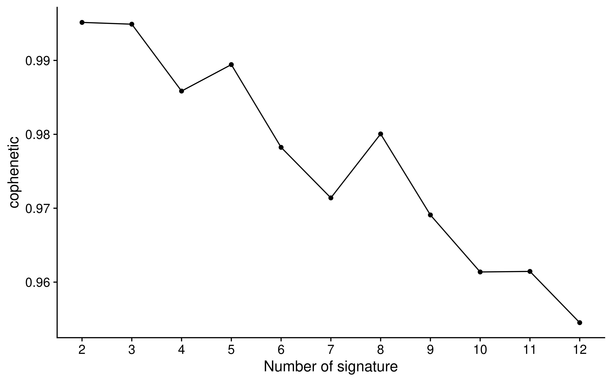
The best possible signature number value is the one at which the cophenetic correlation value on the y-axis drops significantly (Gaujoux and Seoighe 2010). Here we can take that the value 5 is the optimal signature number. For 3, it is small to produce the result with biological significance due to the hugo contribution of CNV in prostate cancer; for 8, it is a little bigger, so it may be not easy to understand the result considering currently we know few about the mechanism and consequence of copy number events.
p = show_sig_number_survey(EST.seqz.W.all, right_y = NULL)
add_h_arrow(p, x = 5.2, y = 0.99, seg_len = 0.5, space = 0.2)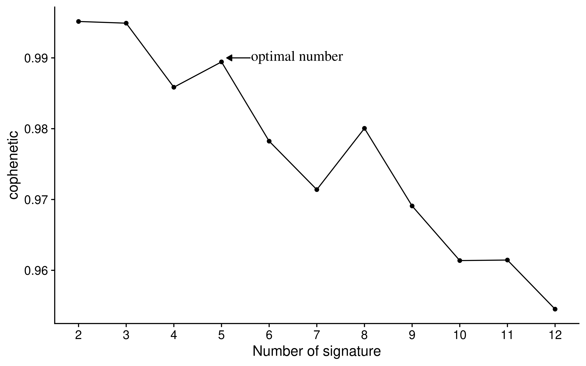
Next we take a look at SBS.
p = show_sig_number_survey(EST.Maf, right_y = NULL)
add_h_arrow(p, x = 3.2, y = 0.982, seg_len = 0.5, space = 0.2)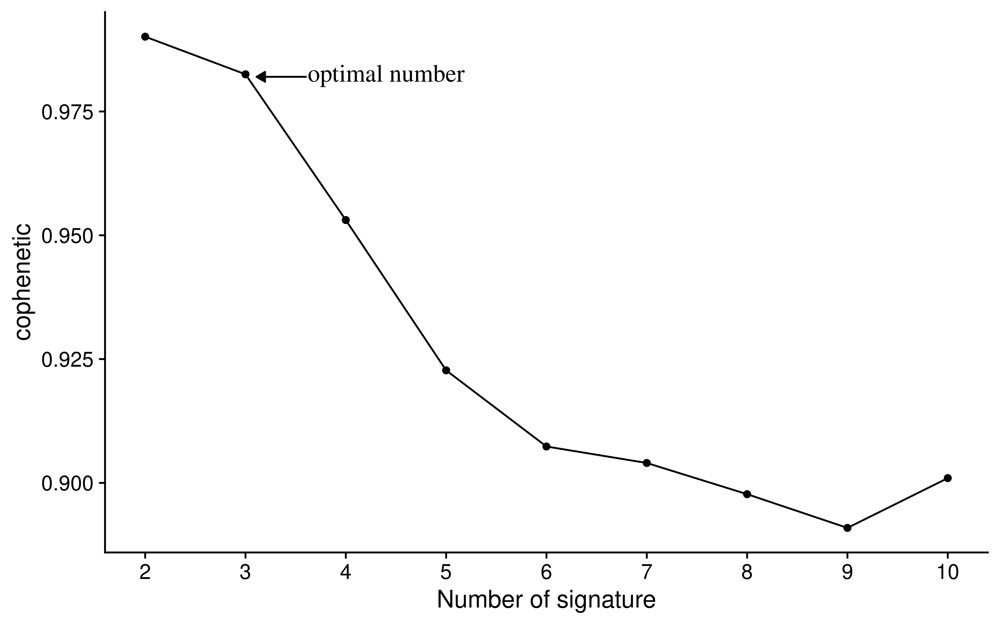
For SBS, we select 3. We have the knowledge that 3 mutational signatures from TCGA prostate cancers are recorded in COSMIC database (COSMIC 1, 5, 6), and the cophenetic has a sharp decrease after 3 indicating that substantially less stability is achieved using more than 3 clusters.
Extract signatures
Now that we have determined the signature number, we then extract the signatures with 50 runs.
Copy number:
# Extract signatures ------------------------------------------------------
Sig.CNV.seqz.W <- sig_extract(CNV.seqz.tally.W$nmf_matrix, n_sig = 5, nrun = 50, cores = ncores)
save(Sig.CNV.seqz.W, file = "../output/Sig.CNV.seqz.W.RData")SBS:
Show signature profile and aetiology
Now that we have the extracted signatures, we can show the signature profile.
SBS signature profile
# I provide two style 'default' and 'cosmic' in sigminer
show_sig_profile(Sig.SNV, mode = "SBS", style = "cosmic", x_label_angle = 90, x_label_vjust = 0.5)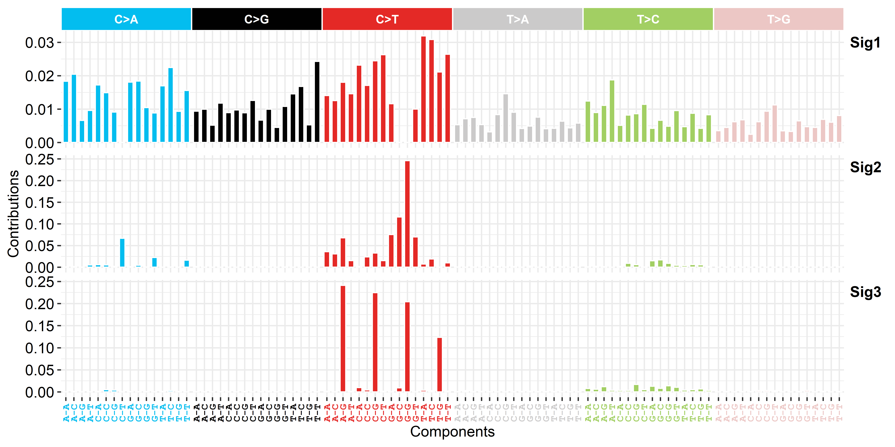
SBS signatures are displayed based on the observed component frequency of the human genome, i.e., representing the relative proportions of mutations generated by each signature based on the actual trinucleotide frequencies of the reference human genome.
The aetiology of SBS signatures is more clear than the aetiology of copy number signatures. We can find aetiologies of the 3 signatures above by computing their cosine similarity to COSMIC reference signatures.
We compare the 3 signature to COSMIC signature database v2 and v3.
sim_v2 = get_sig_similarity(Sig.SNV, sig_db = "legacy")
#> -Comparing against COSMIC signatures
#> ------------------------------------
#> --Found Sig1 most similar to COSMIC_3
#> Aetiology: defects in DNA-DSB repair by HR [similarity: 0.844]
#> --Found Sig2 most similar to COSMIC_15
#> Aetiology: defective DNA mismatch repair [similarity: 0.943]
#> --Found Sig3 most similar to COSMIC_1
#> Aetiology: spontaneous deamination of 5-methylcytosine [similarity: 0.935]
#> ------------------------------------
#> Return result invisiblely.sim_v3 = get_sig_similarity(Sig.SNV, sig_db = "SBS")
#> -Comparing against COSMIC signatures
#> ------------------------------------
#> --Found Sig1 most similar to SBS40
#> Aetiology: Unknown [similarity: 0.883]
#> --Found Sig2 most similar to SBS15
#> Aetiology: Defective DNA mismatch repair [similarity: 0.967]
#> --Found Sig3 most similar to SBS1
#> Aetiology: spontaneous or enzymatic deamination of 5-methylcytosine [similarity: 0.966]
#> ------------------------------------
#> Return result invisiblely.From the results above, basically we can confirm that the aetiology of Sig2 is dMMR (defects in mismatch repair) and the aetiology of Sig3 is aging. The aetiology of Sig1 may be HRD (Defective homologous recombination-based DNA damage repair) or an unknown reason.
p = show_sig_profile(Sig.SNV, mode = "SBS", style = "cosmic", x_label_angle = 90, x_label_vjust = 0.5)
add_labels(p, x = 0.92, y = 0.3, y_end = 0.85, n_label = 3,
labels = rev(c("HRD or unknown", "dMMR", "Aging")), hjust = 1)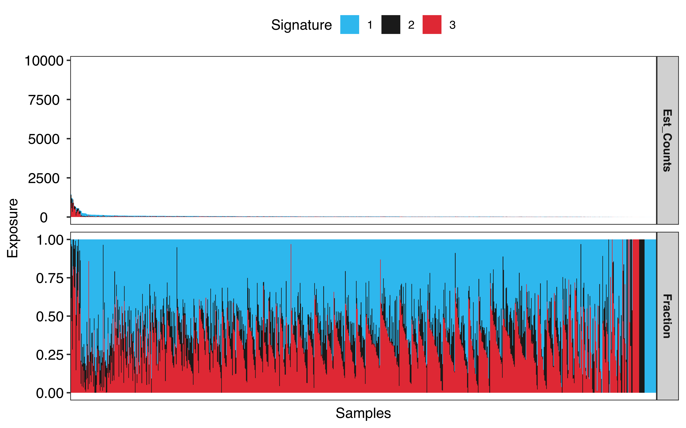
The exposure of signatures in each sample is plotted as the below.
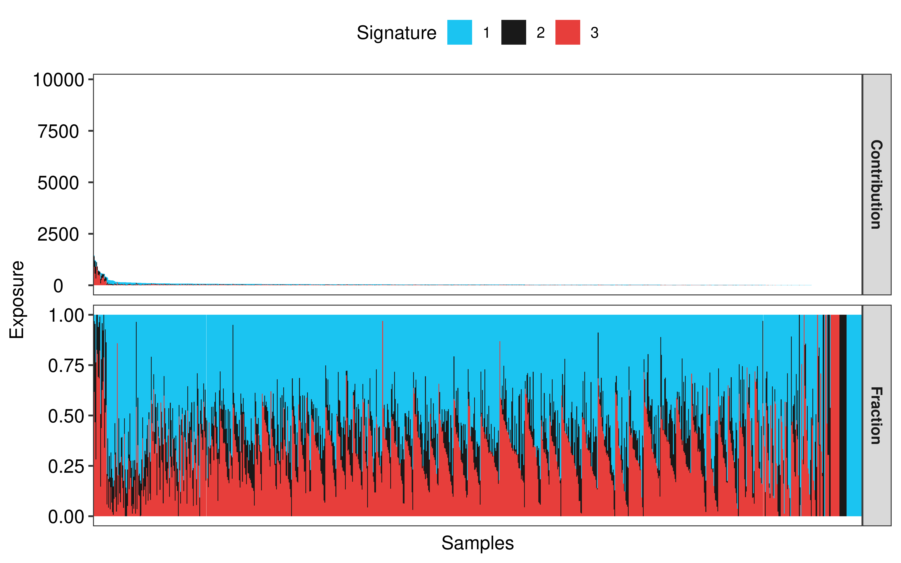
Set a cutoff 2000 to remove some outliers.
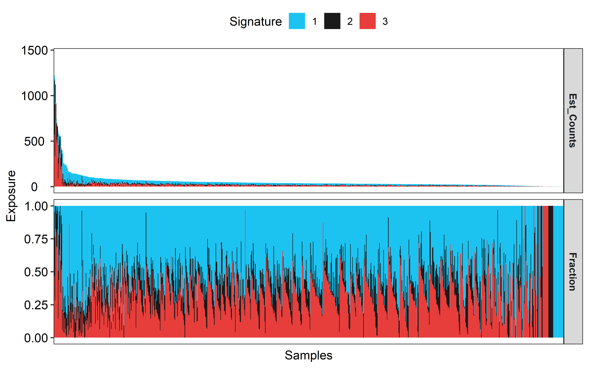
The
Est_Countspanel shows the estimated SBS count.
We can clearly see that
- most of samples have very few SBS signature exposures.
Sig1andSig3are the major resources.
Copy number signature profile
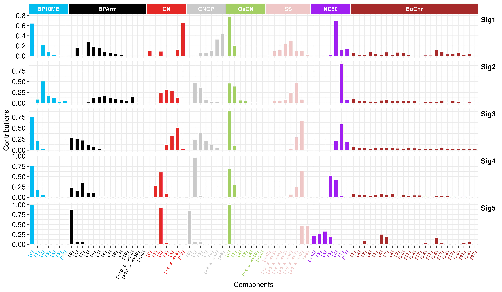
Similar to SBS signatures, copy number signatures are displayed based on the observed component frequency of the human genome. Of note, considering the count process of each feature is relatively independent, the profile is row normalized by each feature, unlike Macintyre et al. (2018) did column normalization (this method is easy to mislead readers), so the bar height can be compared within/between features.
There is no reference database for copy number signatures, we cannot get aetiologies of the 5 signatures by similarity computation. By reading the description of previous reports (Macintyre et al. 2018; Yi and Ju 2018) and studying the signature profile carefully, we determine or limite aetiologies of the 5 signatures with also the downstream analyses supported. Please see our manuscript (TODO) for details.
The exposure of signatures in each sample is plotted as the below.
The
Est_Countspanel shows the estimated copy number segment count.
Show similarity matrix
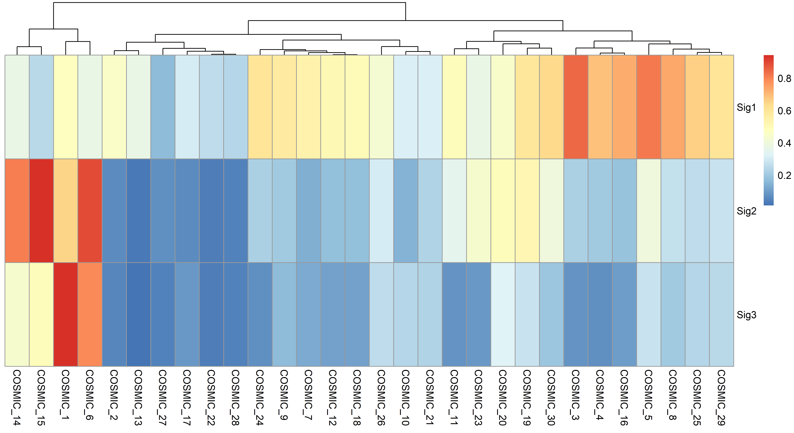
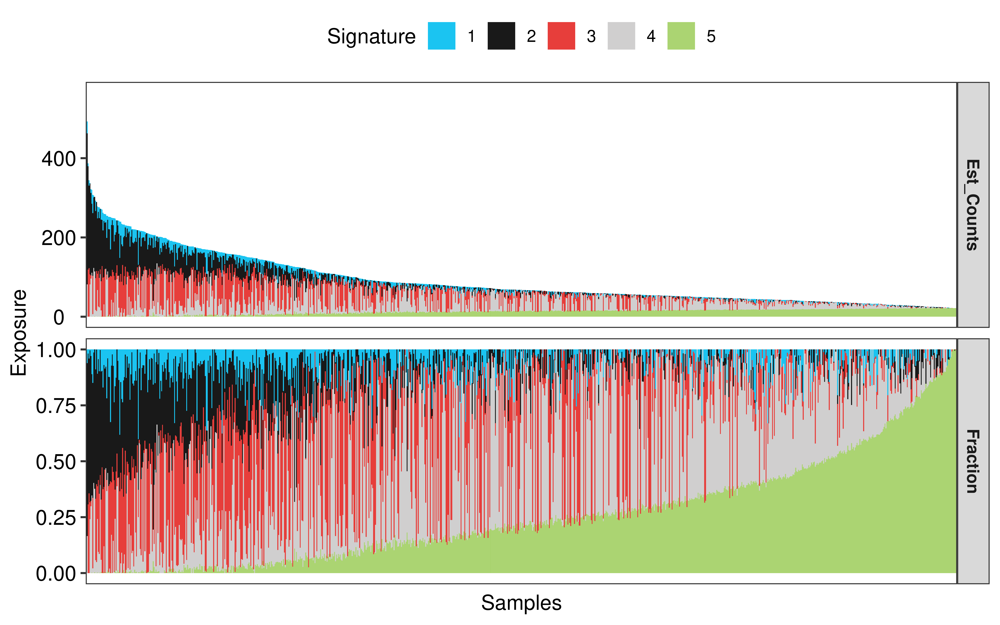
Check the signature exposure
Signature exposure is the estimation of mutation calling records. Here we check this by correlation analysis.
Mutation
Observe total SBS mutations from data.
load(file = "../output/PRAD_TCGA_plus_dbGap_Maf.RData")
Maf_dt = rbind(Maf@data, Maf@maf.silent)
Mut_dt = Maf_dt[Variant_Type == "SNP", .(Total = .N), by = Tumor_Sample_Barcode]Estimate SBS mutations from signature exposure.
Merge the two data.table above.
Mut_merged_dt = merge(Mut_dt, Mut_expo, by.x = "Tumor_Sample_Barcode", by.y = "sample")
# log10 the data
Mut_merged_dt[, `:=`(Total = log10(Total), Est = log10(Est))]
head(Mut_merged_dt)
#> Tumor_Sample_Barcode Total Est
#> 1: SRR2404024 1.6989700 1.6989700
#> 2: SRR2404067 0.9542425 0.9542425
#> 3: SRR2404095 1.9344985 1.9344984
#> 4: SRR2404185 1.7708520 1.7708520
#> 5: SRR2404230 1.8325089 1.8325089
#> 6: SRR2404278 1.9777236 1.9777236Now we can see their correlation.
ggpubr::ggscatter(Mut_merged_dt, x = "Total", y = "Est", add = "reg.line",
xlab = "Log10 based total SBS counts (observed)",
ylab = "Log10 based total SBS counts (estimated)") +
ggpubr::stat_cor(label.x.npc = 0.5, label.y.npc = 0.8)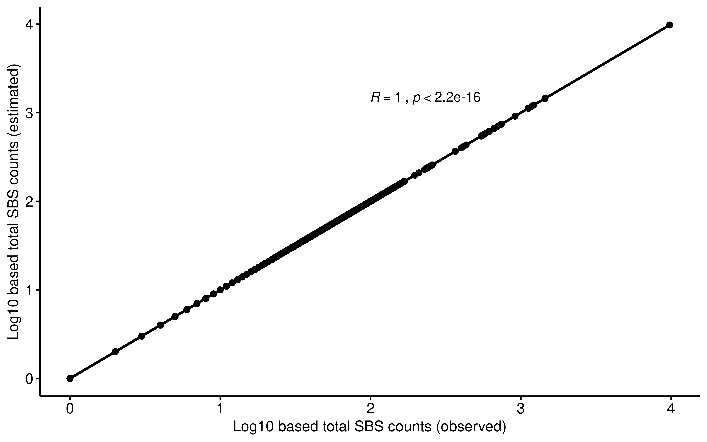
We can know that we did a perfect NMF for SBS data.
Copy number
Observe total segment counts from copy number data.
Estimate segment counts from signature exposure.
Merge the two data.table above.
CN_merged_dt = merge(CN_dt, CN_expo, by = "sample")
head(CN_merged_dt)
#> sample Total Est
#> 1: 00-000450-SRR474658 58 61.71629
#> 2: 00-1165-SRR461844 51 51.71139
#> 3: 00-160-SRR471373 65 68.69707
#> 4: 00-1823-SRR471613 75 79.23348
#> 5: 01-1934-SRR471793 80 84.30801
#> 6: 01-2382-SRR471433 51 54.44634Now we can see their correlation.
ggpubr::ggscatter(CN_merged_dt, x = "Total", y = "Est", add = "reg.line",
xlab = "Log10 based total segment counts (observed)",
ylab = "Log10 based total segment counts (estimated)") +
ggpubr::stat_cor(label.x.npc = 0.5, label.y.npc = 0.8, hjust = 1)
We can see that the estimation of copy number segment count fits observed data well. The residue can be further visualized by histgram.

Association Analysis
This part has been divided into 2 sections: data integration and association analysis.
Data integration
In this section, I integrate all genotype/phenotype data as a tidy data table used for downstream analyses.
Load packages and prepared data.
# Integrate all informaiton to sample level
library(tidyverse)
library(sigminer)
library(maftools)
# Loading clinical related data -------------------------------------------
Info <- readRDS("../data/PRAD_CLINICAL.rds")
# Purity and ploidy info from sequenza
PurityInfo <- read_tsv("../data/PRAD_Purity_and_Ploidy_Sequenza.tsv")
# Processing CNV data -----------------------------------------------------
load("../output/CNV.seqz.RData")
load("../output/Sig.CNV.seqz.W.RData")
CNV <- CNV.seqz
Sig.CNV <- Sig.CNV.seqz.W
rm(Sig.CNV.seqz.W, CNV.seqz)After running NMF, we can get robust clusters from consensus matrix, more see ?NMF::predict.
I also create functions get_sig_exposure() to get the absolute/relative exposure of signatures and scoring() to get scores of typical copy number features. More run ?sigminer::get_sig_exposure and ?sigminer::scoring in your R console or see the package manual.
Relative exposure is more useful for clustering and absolute exposure is more useful for association analysis.
# CNV
CNVGroupInfo <- get_groups(Sig.CNV, method = "consensus", match_consensus = TRUE)
#> => Obtaining clusters from the hierarchical clustering of the consensus matrix...
#> => Finding the dominant signature of each group...
#> => Generating a table of group and dominant signature:
#>
#> Sig1 Sig2 Sig3 Sig4 Sig5
#> 1 9 2 14 10 0
#> 2 0 60 0 3 0
#> 3 0 3 219 2 0
#> 4 0 0 0 170 0
#> 5 0 3 35 200 207
#> => Assigning a group to a signature with the maxium fraction (stored in 'map_table' attr)...
#> => Summarizing...
#> group #1: 35 samples with Sig3 enriched.
#> group #2: 63 samples with Sig2 enriched.
#> group #3: 224 samples with Sig3 enriched.
#> group #4: 170 samples with Sig4 enriched.
#> group #5: 445 samples with Sig5 enriched.
CNVInfo <- CNV@summary.per.sample
CNVExposureInfo <- get_sig_exposure(Sig.CNV)
CNVscores <- scoring(CNV)We find that the group 1 is assigned to Sig3 due to sample with Sig3 dominant has the maximum fraction in group 1. However, group 1 is the only group with Sig1 enriched. So we modify this result.
Next, we process mutation data to get TMB, driver info, clusters, and etc (detail of some step has been described in R script of the repo).
# Processing mutation data ------------------------------------------------
load(file = "../output/PRAD_TCGA_plus_dbGap_Maf.RData")
load(file = "../output/Sig.PRAD_TCGA_plus_dbGap_Maf.RData")
Maf_samp = data.table::data.table(
Tumor_Sample_Barcode = unique(rbind(Maf@data, Maf@maf.silent)$Tumor_Sample_Barcode)
)
TMBInfo <- Maf@variant.type.summary
TMBInfo$n_INDEL = TMBInfo$DEL + TMBInfo$INS
TMBInfo = TMBInfo[, .(Tumor_Sample_Barcode, n_INDEL, SNP)]
colnames(TMBInfo)[3] = "n_SNV"
TMBInfo = merge(Maf_samp, TMBInfo, by = "Tumor_Sample_Barcode", all = TRUE)
# Fill NAs
TMBInfo = TMBInfo %>%
dtplyr::lazy_dt() %>%
dplyr::mutate_at(vars(dplyr::starts_with("n_")), ~ifelse(is.na(.), 0, .)) %>%
data.table::as.data.table()
load(file = "../output/PRAD_driver_info.RData")
load(file = "../output/PRAD_heter_info.RData")
SNVGroupInfo <- get_groups(Sig.SNV, method = "consensus", match_consensus = TRUE)
#> => Obtaining clusters from the hierarchical clustering of the consensus matrix...
#> => Finding the dominant signature of each group...
#> => Generating a table of group and dominant signature:
#>
#> Sig1 Sig2 Sig3
#> 1 16 34 21
#> 2 30 0 193
#> 3 677 0 0
#> => Assigning a group to a signature with the maxium fraction (stored in 'map_table' attr)...
#> => Summarizing...
#> group #1: 71 samples with Sig2 enriched.
#> group #2: 223 samples with Sig3 enriched.
#> group #3: 677 samples with Sig1 enriched.
SNVExposureInfo <- get_sig_exposure(Sig.SNV)
# Processing gene and pathway mutation ------------------------------------
load(file = "../output/PRAD_gene_and_pathway_mutation.RData")Next, we keep keys of all data.frames are same and merge them into one.
# Merge data --------------------------------------------------------------
Info <- Info %>%
dplyr::mutate(
CNV_ID = dplyr::case_when(
!startsWith(tumor_Run, "TCGA") & !is.na(tumor_Run) ~ paste(subject_id, tumor_Run, sep = "-"),
startsWith(tumor_Run, "TCGA") & !is.na(tumor_Run) ~ tumor_Run,
TRUE ~ NA_character_
)
)
PurityInfo
#> # A tibble: 938 x 3
#> purity ploidy sample
#> <dbl> <dbl> <chr>
#> 1 0.59 1.9 00-000450-SRR474658
#> 2 0.55 1.9 00-1165-SRR461844
#> 3 0.75 1.9 00-160-SRR471373
#> 4 0.72 2 00-1823-SRR471613
#> 5 0.73 2 01-1934-SRR471793
#> 6 0.4 1.9 01-2382-SRR471433
#> 7 0.45 4.1 01-2492-SRR471733
#> 8 0.73 2 01-2554-SRR471673
#> 9 0.22 3.4 01-28-SRR471073
#> 10 0.35 2 02-1082-SRR472616
#> # … with 928 more rows
colnames(CNVGroupInfo) <- c("sample", "cnv_group", "cnv_weight", "cnv_enrich_sig")
CNVInfo
#> sample n_of_cnv n_of_amp n_of_del n_of_vchr cna_burden
#> 1: TCGA-HI-7169-01 2 2 0 0 0.000
#> 2: TCGA-CH-5743-01 3 2 1 1 0.000
#> 3: TCGA-EJ-7791-01 3 3 0 1 0.000
#> 4: TCGA-FC-A66V-01 3 3 0 1 0.000
#> 5: TCGA-J4-AATV-01 3 3 0 0 0.000
#> ---
#> 933: 5115609-SRR8311697 303 291 12 22 0.856
#> 934: 5115412-SRR8311627 356 354 2 22 0.948
#> 935: 5115406-SRR8312068 367 337 30 22 0.297
#> 936: 36-SRR5876749 393 392 1 22 0.926
#> 937: 5115615-SRR8311749 420 406 14 22 0.360
colnames(CNVExposureInfo) <- c("sample", paste0("CN-", colnames(CNVExposureInfo)[-1]))
colnames(TMBInfo)[1] <- "sample"
TMBInfo[, sample := as.character(sample)][, sample := ifelse(startsWith(sample, "TCGA"),
substr(sample, 1, 15),
sample
)]
colnames(DriverDF)[1] = "sample"
DriverDF[, sample := as.character(sample)][, sample := ifelse(startsWith(sample, "TCGA"),
substr(sample, 1, 15),
sample
)]
colnames(SNVGroupInfo) <- c("sample", "snv_group", "snv_weight", "snv_enrich_sig")
SNVGroupInfo[, sample := as.character(sample)][, sample := ifelse(startsWith(sample, "TCGA"),
substr(sample, 1, 15),
sample
)]
colnames(SNVExposureInfo) <- c("sample", paste0("SBS-", colnames(SNVExposureInfo)[-1]))
SNVExposureInfo[, sample := as.character(sample)][, sample := ifelse(startsWith(sample, "TCGA"),
substr(sample, 1, 15),
sample
)]
colnames(TitvInfo) <- c("sample", "Ti_fraction", "Tv_fraction")
TitvInfo[, sample := as.character(sample)][, sample := ifelse(startsWith(sample, "TCGA"),
substr(sample, 1, 15),
sample
)]
colnames(MathDF) <- c("sample", "MATH")
MathDF[, sample := as.character(sample)][, sample := ifelse(startsWith(sample, "TCGA"),
substr(sample, 1, 15),
sample
)]
colnames(ClusterDF) <- c("sample", "n_mutation_cluster")
ClusterDF[, sample := as.character(sample)][, sample := ifelse(startsWith(sample, "TCGA"),
substr(sample, 1, 15),
sample
)]
# data.table::setDT(summary_mutation)
# data.table::setDT(summary_pathway)
colnames(summary_mutation)[1] <- "sample"
colnames(summary_pathway)[1] <- "sample"
summary_mutation[, sample := as.character(sample)][, sample := ifelse(startsWith(sample, "TCGA"),
substr(sample, 1, 15),
sample
)]
summary_pathway[, sample := as.character(sample)][, sample := ifelse(startsWith(sample, "TCGA"),
substr(sample, 1, 15),
sample
)]
colnames(CNVInfo)[2:4] = c("n_CNV", "n_Amp", "n_Del")
MergeInfo <- Info[which(!is.na(Info$tumor_Run)), ] %>%
left_join(CNVInfo[, .(sample, n_CNV, n_Amp, n_Del)], by = c("CNV_ID" = "sample")) %>%
left_join(CNVscores, by = c("CNV_ID" = "sample")) %>%
left_join(CNVGroupInfo, by = c("CNV_ID" = "sample")) %>%
left_join(CNVExposureInfo, by = c("CNV_ID" = "sample")) %>%
left_join(PurityInfo, by = c("CNV_ID" = "sample")) %>%
left_join(summary_mutation, by = c("tumor_Run" = "sample")) %>%
left_join(summary_pathway, by = c("tumor_Run" = "sample")) %>%
left_join(TMBInfo, by = c("tumor_Run" = "sample")) %>%
left_join(DriverDF, by = c("tumor_Run" = "sample")) %>%
dplyr::mutate(
n_driver = ifelse(!is.na(n_driver), n_driver, 0)
) %>%
left_join(TitvInfo, by = c("tumor_Run" = "sample")) %>%
left_join(MathDF, by = c("tumor_Run" = "sample")) %>%
left_join(ClusterDF, by = c("tumor_Run" = "sample")) %>%
left_join(SNVGroupInfo, by = c("tumor_Run" = "sample")) %>%
left_join(SNVExposureInfo, by = c("tumor_Run" = "sample")) %>%
mutate(
Stage = factor(Stage, ordered = TRUE),
Fusion = ifelse(Fusion == "Negative", "No", "Yes"),
sample_type = ifelse(sample_type == "Unknown", "Metastatic", sample_type), # phs000909 are metastatic samples, https://www.ncbi.nlm.nih.gov/projects/gap/cgi-bin/study.cgi?study_id=phs000909.v1.p1
HasFusion = Fusion,
HasFusion = ifelse(HasFusion == "Yes", TRUE, FALSE),
IsMetastatic = ifelse(sample_type == "Metastatic", TRUE, FALSE)
) %>%
select(-sTDP, -lTDP)
saveRDS(MergeInfo, file = "../output/PRAD_Merge_Info_CNV_from_sequenza_update.RDS")Association analysis
Now we do association analysis between signatures (via exposure) and genotypes/phenotypes.
Prepare
Load packages.
Load the data.
Set the coloumns used for analysis.
colnames(df.seqz)[c(19, 23:26)] = c("MACN score", "TD score", "sTD score", "lTD score", "Chromothripisis score")
# Just use ploidy from sequenza
df.seqz$Ploidy = NULL
# Merge BRCA1 and BRCA2
df.seqz[["BRCA1/2"]] = df.seqz$BRCA1 | df.seqz$BRCA2
# Merge PIK3CA and PIK3CB
df.seqz[["PIK3CA/B"]] = df.seqz$PIK3CA | df.seqz$PIK3CB
# Output for reporting as supp table
openxlsx::write.xlsx(df.seqz, file = "../output/supp_sample_table.xlsx")
# Save for futher use
saveRDS(df.seqz, file = "../output/df.seqz.RDS")
cols_to_sigs.seqz <- c(paste0("CN-Sig", 1:5), paste0("SBS-Sig", 1:3))
# genes
cols_to_mutated_genes <- c(colnames(df.seqz)[c(38:41, 44:54)], "BRCA1/2", "PIK3CA/B")
# pathways
cols_to_mutated_pathways <- colnames(df.seqz)[55:66]
# Exclude PSA
cols_to_features <- c(
"IsMetastatic", "HasFusion",
"Age", "Stage", "GleasonScore",
"n_SNV", "n_driver", "n_INDEL", "Ti_fraction", "Tv_fraction",
"cnaBurden", "n_CNV", "n_Amp", "n_Del", "ploidy",
"TD score",
# "sTD score", "lTD score",
"Chromothripisis score", "MACN score",
"MATH", "n_mutation_cluster", "purity"
)
feature_type <- c(rep("ca", 2L), rep("co", length(cols_to_features) - 2L))Signatures & features
Analyze the association between signatures and features.
tidy_data.seqz.feature <- get_sig_feature_association(df.seqz,
cols_to_sigs = cols_to_sigs.seqz,
cols_to_features = cols_to_features,
method_co = "pearson",
type = feature_type,
min_n = 2,
verbose = TRUE) %>%
get_tidy_association(p_adjust = TRUE) # adjust p value with FDR
#> -> Detecting and transforming possibly ordinal variables...
#> -> Calculating correlations for continuous variables using pearson...
#> -> Calculating correlations for categorical variables using wilcox.test...
#> --> building test models, be patient...
#> --> done
#> --> obtaining model results...
#> --> done
#> --> collecting data...
#> --> done
#> -> DoneAssociation of signature exposures with other features was performed using one of two procedures: for a continuous association variable (including ordinal variable), pearson correaltion was performed; for a binary association variable, samples were divided into two groups and Mann-Whitney U-test was performed to test for differences in signature exposure medians between the two groups.
Show the result.

All shown circles are statistically significant results (FDR < 0.05). A feature will be chopped off from the plot if has no correlation with any signatures. Same for the similar plots below.
The result table:
Signatures & mutated genes
Analyze the association between signatures and mutated genes (only driver genes identified by MutSig).
tidy_data.seqz.gene <- get_sig_feature_association(df.seqz,
cols_to_sigs = cols_to_sigs.seqz,
cols_to_features = cols_to_mutated_genes,
min_n = 2,
type = "ca",
verbose = TRUE) %>%
get_tidy_association(p_adjust = TRUE)
#> -> Detecting and transforming possibly ordinal variables...
#> -> Calculating correlations for categorical variables using wilcox.test...
#> --> building test models, be patient...
#> --> done
#> --> obtaining model results...
#> --> done
#> --> collecting data...
#> --> done
#> -> Donesum_genes = tidy_data.seqz.gene %>%
dplyr::filter(p <= 0.05) %>%
dplyr::summarise(min = min(measure, na.rm = T),
max = max(measure, na.rm = T),
sum = list(summary(measure)))
sum_genes$sum
#> [[1]]
#> Min. 1st Qu. Median Mean 3rd Qu. Max.
#> -17.300 -3.830 6.675 17.086 20.550 286.000# myPalette <- colorRampPalette(rev(brewer.pal(11, "RdYlBu")))
# sc <- scale_colour_gradientn(colours = myPalette(100), limits=c(-20, 600))
sc <- scale_colour_gradientn(
colors = c("lightblue", "white", "orange", "red"),
values = scales::rescale(c(
sum_genes$min,
0,
20,
sum_genes$max
)))
show_sig_feature_corrplot(tidy_data.seqz.gene,
ylab = "Mutated genes",
ca_gradient_colors = sc,
p_val = 0.05) # p_val needs to keep in line with the sum_genes p <= 0.05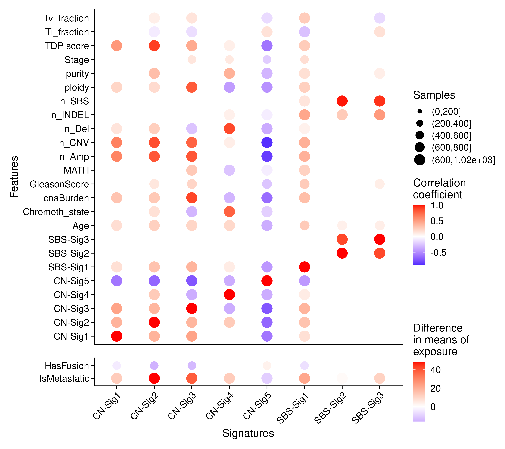
The result table:
Signatures & mutated pathways
Analyze the association between signatures and mutated pathways.
tidy_data.seqz.pathways <- get_sig_feature_association(df.seqz,
cols_to_sigs = cols_to_sigs.seqz,
cols_to_features = cols_to_mutated_pathways,
type = "ca",
min_n = 2,
verbose = TRUE) %>%
get_tidy_association(p_adjust = TRUE)
#> -> Detecting and transforming possibly ordinal variables...
#> -> Calculating correlations for categorical variables using wilcox.test...
#> --> building test models, be patient...
#> --> done
#> --> obtaining model results...
#> --> done
#> --> collecting data...
#> --> done
#> -> Donesum_pathways = tidy_data.seqz.pathways %>%
dplyr::filter(p <= 0.05) %>%
dplyr::summarise(min = min(measure, na.rm = T),
max = max(measure, na.rm = T),
sum = list(summary(measure)))
sum_pathways$sum
#> [[1]]
#> Min. 1st Qu. Median Mean 3rd Qu. Max.
#> -4.130 7.393 16.700 61.573 75.125 768.000sc <- scale_colour_gradientn(
colors = c("lightblue", "white", "orange", "red"),
values = scales::rescale(c(
sum_pathways$min,
0,
20,
sum_pathways$max
)))
show_sig_feature_corrplot(tidy_data.seqz.pathways,
ylab = "Mutated pathways",
ca_gradient_colors = sc,
p_val = 0.05)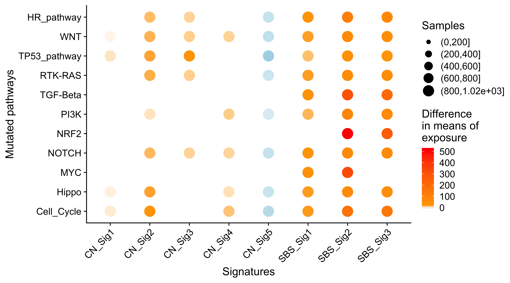
The result table:
Correlation network
To determine the structure of relationship between signatures and features, we use continuous variables to do correlation network analysis.
f_dt = df.seqz[, c(cols_to_sigs.seqz, cols_to_features[c(-1, -2)])] %>%
dplyr::mutate_if(is.ordered, as.numeric)library(corrr)
res.cor <- correlate(f_dt,
use = "pairwise.complete.obs",
method = "pearson"
) %>%
dplyr::mutate_if(is.numeric, dplyr::coalesce, 0)
#>
#> Correlation method: 'pearson'
#> Missing treated using: 'pairwise.complete.obs'
## Avoid corrr error
## https://github.com/tidymodels/corrr/issues/86
## https://github.com/tidymodels/corrr/issues/34
## https://github.com/tidymodels/corrr/issues/78
set.seed(1234)
res.cor[,-1] = res.cor[, -1] + matrix(
rnorm(nrow(res.cor[, -1]) * ncol(res.cor[, -1]), mean = 0, sd = 0.01),
nrow = nrow(res.cor[, -1]),
byrow = TRUE
)
p = res.cor %>%
network_plot(min_cor = 0.2,
colours = rev(c("indianred2", "white", "skyblue1")))
#png("corrr_network.png", width = 7, height = 7, res = 300)
p + scale_size(range=c(0.1, 2))
#> Scale for 'size' is already present. Adding another scale for 'size', which
#> will replace the existing scale.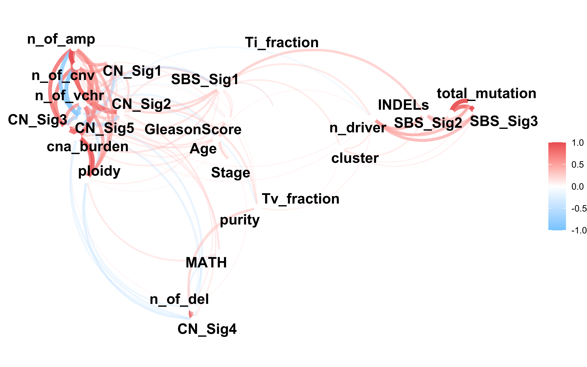
variables that are more highly correlated appear closer together and are joined by stronger paths. Paths are also colored by their sign. The proximity of the points are determined using multidimensional clustering.
Signatures & PSA
In all datasets we collected, 3 of them have PSA info. However, the range of PSA value in 3 datasets differs, so I excluded PSA from features above and analyze it independently.
df.seqz.psa = df.seqz %>%
dplyr::filter(!is.na(PSA)) %>%
dplyr::select(contains("Sig", ignore.case = F), c("PSA", "Study", "CNV_ID"))
df.seqz.psa <- df.seqz.psa %>%
dplyr:::group_by(Study) %>%
tidyr::nest() %>%
dplyr::summarise(
data = purrr:::map(data, function(x) {
get_sig_feature_association(x,
cols_to_sigs = cols_to_sigs.seqz,
cols_to_features = "PSA",
method_co = "pearson",
type = "co", verbose = TRUE) %>%
get_tidy_association(p_adjust = TRUE)
})
) %>%
tidyr::unnest("data") %>%
dplyr::filter(feature == "PSA") %>%
dplyr::mutate(feature = Study)
#> -> Detecting and transforming possibly ordinal variables...
#> -> Calculating correlations for continuous variables using pearson...
#> -> Done
#> -> Detecting and transforming possibly ordinal variables...
#> -> Calculating correlations for continuous variables using pearson...
#> -> Done
#> -> Detecting and transforming possibly ordinal variables...
#> -> Calculating correlations for continuous variables using pearson...
#> -> Done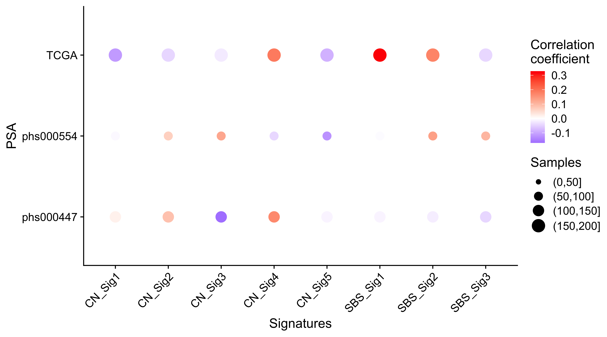
Alought we can observe the statistically significant correlation between signatures and PSA, the results are inconsistent across different studies. This may be explained by the dynamic property of PSA while not the sample type due to most of them are primary.
Group Analysis
This part has been divided into four parts to show the differences across sample groups defined by signature exposure. It provides insight into the heterogeneity of prostate cancers and relative importance of two types of genomic variation signatures.
Load packages.
Load the data.
Group comparison
cols_to_features <- c(
"IsMetastatic", "Stage", "GleasonScore",
"Age",
"n_SNV", "n_driver",
# "n_INDEL",
"Ti_fraction", "Tv_fraction",
"cnaBurden", "n_CNV", "n_Amp", "n_Del", "ploidy",
"TD score",
# "sTD score", "lTD score",
"Chromothripisis score", "MACN score",
"MATH", "n_mutation_cluster", "purity"
)
feature_type <- c(rep("ca", 3L), rep("co", length(cols_to_features) - 3L))df.seqz$GleasonScore = as.character(df.seqz$GleasonScore)
df.seqz$GleasonScore = factor(df.seqz$GleasonScore, levels = as.character(6:10))
df.seqz2 = df.seqz
df.seqz2$cnv_enrich_sig = ifelse(
!is.na(df.seqz2$cnv_enrich_sig),
paste(df.seqz2$cnv_enrich_sig, "enriched"),
NA
)
grp.cnv <- get_group_comparison(
df.seqz2,
col_group = "cnv_enrich_sig", # or "cnv_group"
cols_to_compare = cols_to_features,
type = feature_type
)plot.cnv <- show_group_comparison(
grp.cnv,
xlab = NA,
method = "anova",
text_angle_x = 60,
text_hjust_x = 1,
legend_position_ca = "right",
label.x.npc = "center",
label.y.npc = "top",
label = "p.format",
hjust = 0.5
)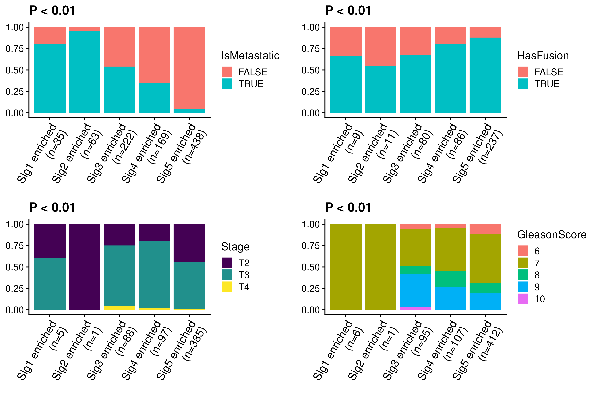
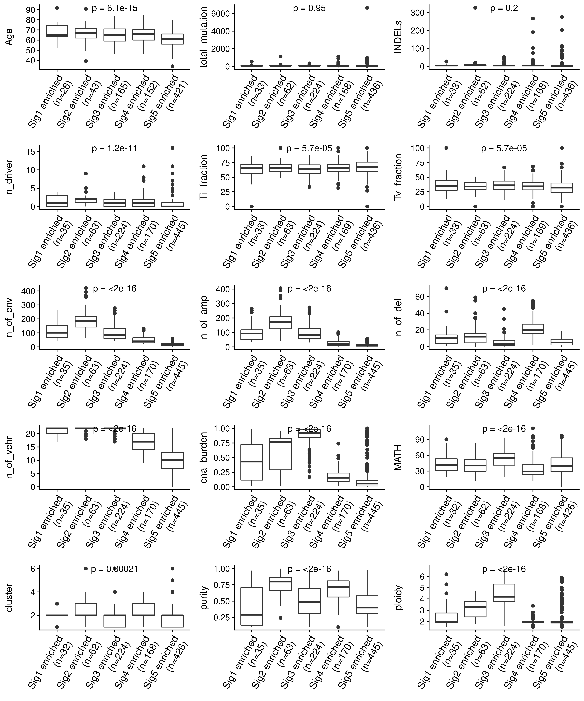
df.seqz2$snv_enrich_sig = ifelse(
!is.na(df.seqz2$snv_enrich_sig),
paste(df.seqz2$snv_enrich_sig, "enriched"),
NA
)
grp.snv <- get_group_comparison(
df.seqz2,
col_group = "snv_enrich_sig", # or "snv_group"
cols_to_compare = cols_to_features,
type = feature_type
)plot.snv <- show_group_comparison(
grp.snv,
xlab = NA,
method = "anova",
text_angle_x = 60,
text_hjust_x = 1,
legend_position_ca = "right",
label.x.npc = "center",
label.y.npc = "top",
label = "p.format",
hjust = 0.5
)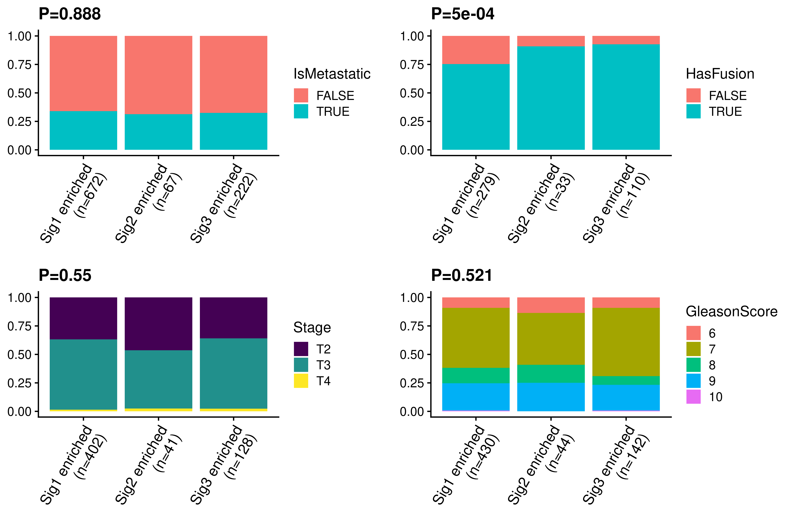
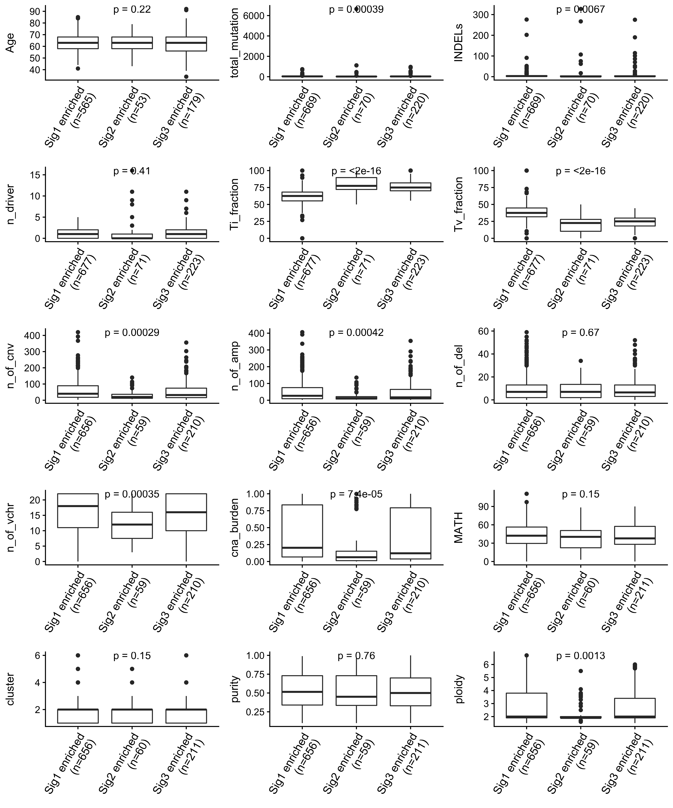
What if there are 5 SBS signatures and samples are divided into 5 groups?
load("../output/Sig5.Maf.RData")
sbs_grp = get_groups(Sig.SNV5, method = "consensus", match_consensus = TRUE)
#>
#> Sig1 Sig2 Sig3 Sig4 Sig5
#> 1 0 0 3 33 1
#> 2 0 0 0 0 198
#> 3 69 21 7 3 42
#> 4 1 14 216 13 44
#> 5 0 272 1 4 29
sbs_grp$sample = ifelse(startsWith(sbs_grp$sample, "TCGA"),
substr(sbs_grp$sample, 1, 15),
sbs_grp$sample)df.seqz3 = dplyr::left_join(
sbs_grp,
df.seqz2,
by = c("sample" = "tumor_Run")
)
df.seqz3$enrich_sig = ifelse(
!is.na(df.seqz3$enrich_sig),
paste(df.seqz3$enrich_sig, "enriched"),
NA
)
grp.snv2 <- get_group_comparison(
df.seqz3,
col_group = "enrich_sig", # or "snv_group"
cols_to_compare = cols_to_features,
type = feature_type
)plot.snv2 <- show_group_comparison(
grp.snv2,
xlab = NA,
method = "anova",
text_angle_x = 60,
text_hjust_x = 1,
legend_position_ca = "right",
label.x.npc = "center",
label.y.npc = "top",
label = "p.format",
hjust = 0.5
)
Group mapping
df.map = df.seqz[, c("sample_type",
"cnv_enrich_sig",
"snv_enrich_sig")] %>%
na.omit()
names(df.map) = c("Sample type", "Enriched CN signature", "Enriched SBS signature")show_group_mapping(df.map,
col_to_flow = "Sample type",
cols_to_map = setdiff(colnames(df.map), "Sample type"),
fill_na = "NA", include_sig = TRUE)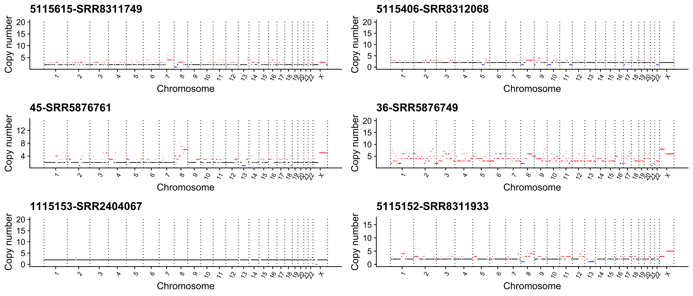
Grouped signature exposure profile
We have showed the exposure profiles, here we add group annotation to them.
Copy number signatures
map_df = df.seqz %>%
dplyr::select(cnv_enrich_sig, CNV_ID) %>%
dplyr::filter(!is.na(CNV_ID))
groups = map_df$cnv_enrich_sig
names(groups) = map_df$CNV_ID
show_sig_exposure(Sig.CNV.seqz.W,
groups = groups,
#grp_order = ,
rm_space = TRUE,
style = "cosmic",
rm_grid_line = FALSE,
rm_panel_border = TRUE,
grp_size = 7)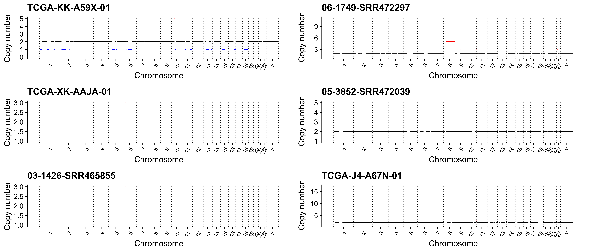
SBS signatures
map_df = df.seqz %>%
dplyr::select(tumor_Run, snv_enrich_sig) %>%
dplyr::filter(!is.na(tumor_Run))
groups = map_df$snv_enrich_sig
names(groups) = map_df$tumor_Run
Sig.SNV2 = Sig.SNV
TCGA_INDEX = startsWith(colnames(Sig.SNV2$Exposure), "TCGA")
colnames(Sig.SNV2$Exposure)[TCGA_INDEX] = substr(colnames(Sig.SNV2$Exposure)[TCGA_INDEX], 1, 15)
show_sig_exposure(Sig.SNV2,
groups = groups,
cutoff = 2000,
rm_space = TRUE,
style = "cosmic",
rm_grid_line = FALSE,
rm_panel_border = TRUE)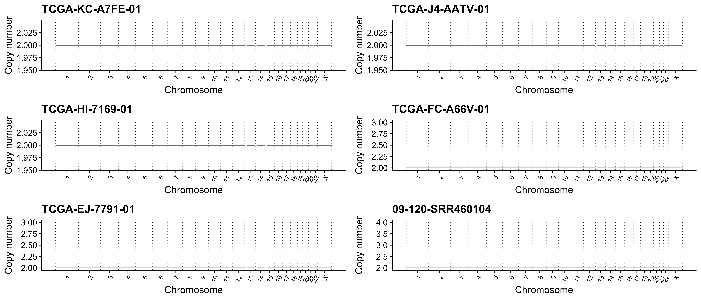
Copy number profile of different groups
There are many differences across copy number groups. Here we go further showing some classic cases by copy number profile.
load("../output/CNV.seqz.RData")
load("../output/Sig.CNV.seqz.W.RData")
load("../output/CNV.seqz.tally.W.RData")There are 5 copy number groups dominated by 4 copy number signatures.
table(df.seqz$cnv_group, df.seqz$cnv_enrich_sig)
#>
#> Sig1 Sig2 Sig3 Sig4 Sig5
#> 1 35 0 0 0 0
#> 2 0 63 0 0 0
#> 3 0 0 224 0 0
#> 4 0 0 0 170 0
#> 5 0 0 0 0 445Get the groups and relative exposures and merge them.
cn_group <- get_groups(Sig.CNV.seqz.W, method = "consensus", match_consensus = TRUE)
#>
#> Sig1 Sig2 Sig3 Sig4 Sig5
#> 1 9 2 14 10 0
#> 2 0 60 0 3 0
#> 3 0 3 219 2 0
#> 4 0 0 0 170 0
#> 5 0 3 35 200 207
cn_group$enrich_sig[cn_group$group == "1"] = "Sig1"
cn_expo <- get_sig_exposure(Sig.CNV.seqz.W, type = "relative")
df <- dplyr::left_join(cn_group, cn_expo)Now we can use data to find the cases with a specific signature enriched.
Sig1 cases
The group with enriched Sig1 is dominated by Sig3, we need to take case of it.
samps_to_show = df %>%
dplyr::filter(enrich_sig == "Sig1") %>%
dplyr::arrange(dplyr::desc(Sig1)) %>%
dplyr::slice(1:6) %>% dplyr::pull(sample)
samps_to_show
#> [1] "5115056-SRR8311885" "TCGA-CH-5748-01" "18-SRR5876729"
#> [4] "5115276-SRR8312040" "3-SRR4044023" "5115198-SRR8311993"
show_cn_profile(
data = CNV.seqz, nrow = 3, ncol = 2, show_title = T,
samples = samps_to_show
)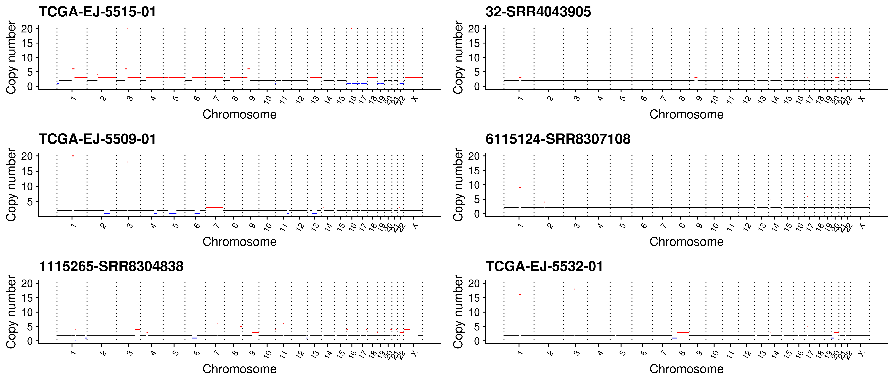
Of note, only the segments with high copy number are contributed by Sig1.
Sig2 cases
samps_to_show = df %>%
dplyr::filter(enrich_sig == "Sig2") %>%
dplyr::arrange(dplyr::desc(Sig2)) %>%
dplyr::slice(1:6) %>% dplyr::pull(sample)
samps_to_show
#> [1] "5115615-SRR8311749" "5115406-SRR8312068" "45-SRR5876761"
#> [4] "36-SRR5876749" "1115153-SRR2404067" "5115152-SRR8311933"
show_cn_profile(
data = CNV.seqz, nrow = 3, ncol = 2, show_title = T,
samples = samps_to_show
)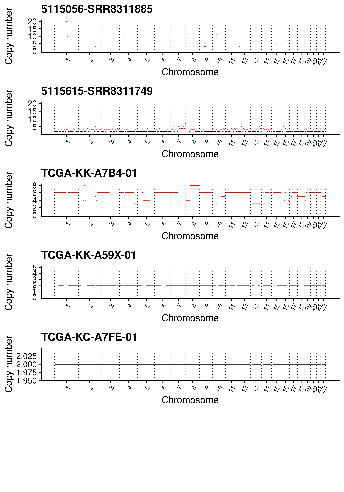
Sig3 cases
samps_to_show = df %>%
dplyr::filter(enrich_sig == "Sig3") %>%
dplyr::arrange(dplyr::desc(Sig3)) %>%
dplyr::slice(1:6) %>% dplyr::pull(sample)
samps_to_show
#> [1] "TCGA-HC-7745-01" "1115082-SRR8304741" "TCGA-KK-A7B4-01"
#> [4] "TCGA-ZG-A9L0-01" "6115317-SRR8307505" "1115091-SRR8304759"
show_cn_profile(
data = CNV.seqz, nrow = 3, ncol = 2, show_title = T,
samples = samps_to_show
)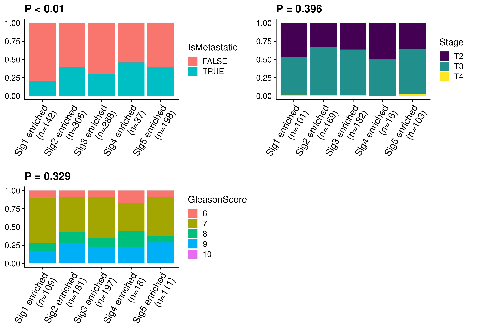
Sig4 cases
samps_to_show = df %>%
dplyr::filter(enrich_sig == "Sig4") %>%
dplyr::arrange(dplyr::desc(Sig4)) %>%
dplyr::slice(1:6) %>% dplyr::pull(sample)
samps_to_show
#> [1] "TCGA-KK-A59X-01" "06-1749-SRR472297" "TCGA-XK-AAJA-01"
#> [4] "05-3852-SRR472039" "03-1426-SRR465855" "TCGA-J4-A67N-01"
show_cn_profile(
data = CNV.seqz, nrow = 3, ncol = 2, show_title = T,
samples = samps_to_show
)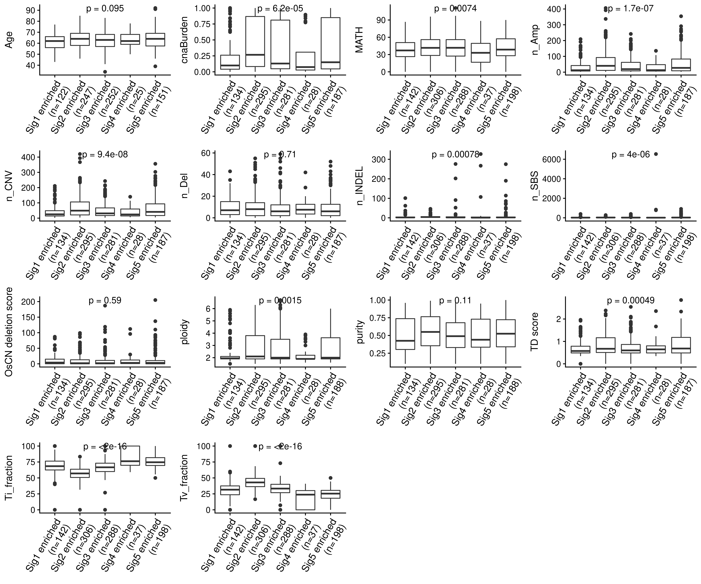
Sig5 cases
samps_to_show = df %>%
dplyr::filter(enrich_sig == "Sig5") %>%
dplyr::arrange(dplyr::desc(Sig5)) %>%
dplyr::slice(1:6) %>% dplyr::pull(sample)
samps_to_show
#> [1] "TCGA-KC-A7FE-01" "TCGA-J4-AATV-01" "TCGA-HI-7169-01" "TCGA-FC-A66V-01"
#> [5] "TCGA-EJ-7791-01" "09-120-SRR460104"
show_cn_profile(
data = CNV.seqz, nrow = 3, ncol = 2, show_title = T,
samples = samps_to_show
)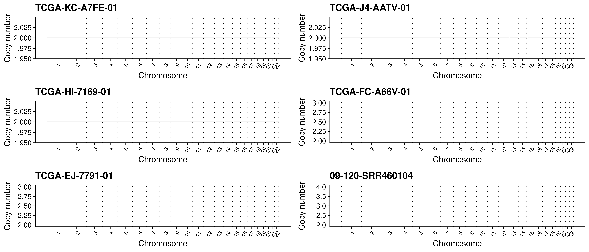
Sig5 enriched case with alterations.
samps_to_show = df %>%
dplyr::filter(enrich_sig == "Sig5") %>%
dplyr::left_join(as.data.frame(CNV.seqz.tally.W$nmf_matrix) %>%
tibble::rownames_to_column("sample") %>%
dplyr::select(sample, `BPArm[2]`, `BPArm[1]`)) %>%
dplyr::mutate(BK = `BPArm[2]` + `BPArm[1]`) %>%
dplyr::arrange(desc(BK)) %>%
dplyr::slice(1:6) %>% dplyr::pull(sample)
samps_to_show
#> [1] "TCGA-EJ-5515-01" "32-SRR4043905" "TCGA-EJ-5509-01"
#> [4] "6115124-SRR8307108" "1115265-SRR8304838" "TCGA-EJ-5532-01"
show_cn_profile(
data = CNV.seqz, nrow = 3, ncol = 2, show_title = T,
samples = samps_to_show
)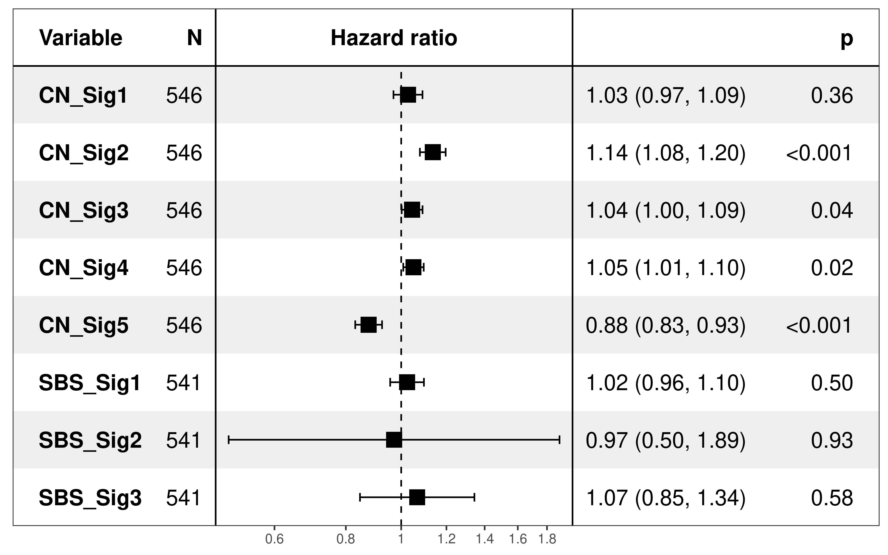
Selected cases
Select one sample for one case above.
show_cn_profile(
data = CNV.seqz, nrow = 6, ncol = 1, show_title = T,
samples = c("5115056-SRR8311885", "5115615-SRR8311749", "TCGA-KK-A7B4-01", "TCGA-KK-A59X-01", "TCGA-KC-A7FE-01")
)
pdf("Selected_cases_circos_heatmap.pdf", width = 2.5, height = 13)
samps = c("5115056-SRR8311885", "5115615-SRR8311749", "TCGA-KK-A7B4-01", "TCGA-KK-A59X-01", "TCGA-KC-A7FE-01")
opar = par(no.readonly = TRUE)
print(par("mar"))
par(mar = rep(0, 4))
layout(matrix(1:5, ncol = 1))
for (samp in samps) {
circlize::circos.par(track.margin=c(0,0))
show_cn_circos(CNV.seqz, samples = samp, show_title = FALSE,
col = circlize::colorRamp2(c(1, 2, 4), c("blue", "white", "red")),
line_lwd = par("lwd") / 4)
}
layout(1)
par(opar)
dev.off()# p_gg = show_cn_profile(
# data = CNV.seqz, nrow = 6, ncol = 1, show_title = T,
# samples = samps
# )
#
# p_base = function() {
# opar = par(no.readonly = TRUE)
# par(mar = c(0, 0, 0, 0))
# on.exit(par(opar))
#
# layout(matrix(1:5, ncol = 1))
# show_cn_circos(CNV.seqz, samples = samps, show_title = FALSE, line_lwd = par("lwd") / 4)
# layout(1)
# }
# cowplot::plot_grid(
# p_gg,
# p_base,
# rel_widths = c(3, 1),
# scale = c(1.0, 0.9)
# )Survival Analysis
To check the clinical relavance of signatures, this part we do survival analysis with Cox model.
Prepare
Load package ezcox for batch Cox analysis.
Load the data.
df.seqz = readRDS(file = "../output/df.seqz.RDS")
surv_df <- readRDS(file = "../data/PRAD_Survival.rds")Clean the data to generate a data table for survival analysis.
range01 <- function(x, ...) {
(x - min(x, ...)) / (max(x, ...) - min(x, ...))
}
cols_to_sigs.seqz <- c(paste0("CN-Sig", 1:5), paste0("SBS-Sig", 1:3))
surv_dt <- dplyr::inner_join(df.seqz %>%
dplyr::select(-c("Study", "subject_id", "tumor_body_site",
"tumor_Run", "normal_Run", "CNV_ID",
"Fusion", "sample_type")),
surv_df, by = c("PatientID" = "sample"))
dup_ids = which(duplicated(surv_dt$PatientID))
# Remove duplicated records
surv_dt = surv_dt[-dup_ids, ]
# Scale the signature exposure to 0-20.
# To better understand the effect of signature exposure on clinical events,
# here we scale them into range 0-20. 1 increase means 5% increase of signature exposure.
#
# Scale the CNA burden to 0-20.
surv_dt = surv_dt %>%
dplyr::mutate(cnaBurden = 20 * cnaBurden,
Stage = as.character(Stage) %>% factor(levels = c("T2", "T3", "T4"))) %>%
dplyr::mutate_at(cols_to_sigs.seqz, ~ 20 * range01(., na.rm = TRUE))
saveRDS(surv_dt, file = "../output/PRAD_merged_survival_dt_seqz.rds")OS analysis fo signatures
############
surv_dt <- readRDS(file = "../output/PRAD_merged_survival_dt_seqz.rds")
cols_to_sigs.seqz <- c(paste0("CN-Sig", 1:5), paste0("SBS-Sig", 1:3))
# Unvariable analysis
show_forest(surv_dt, covariates = cols_to_sigs.seqz,
time = "OS.time", status = "OS", merge_models = TRUE)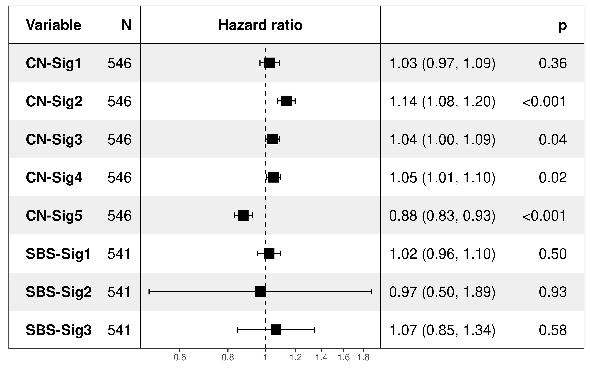
PFS analysis for signatures
show_forest(surv_dt, covariates = cols_to_sigs.seqz,
time = "PFI.time", status = "PFI", merge_models = TRUE)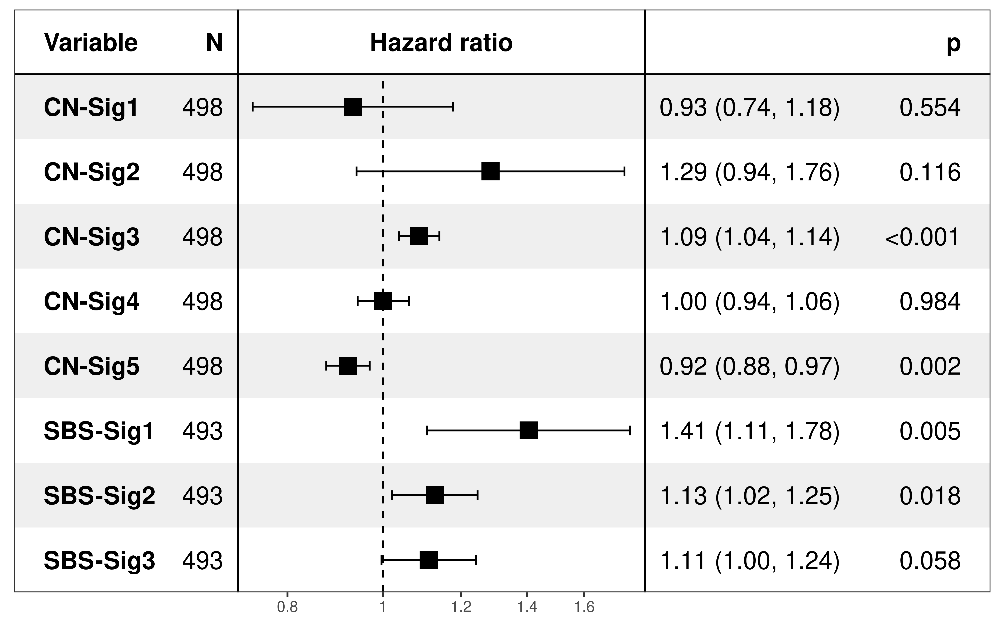
OS analysis for features
cols_to_features <- c(
"Age", "Stage", "GleasonScore",
"n_SNV", "n_driver",
# "n_INDEL",
"Ti_fraction", "Tv_fraction",
"cnaBurden", "n_CNV", "n_Amp", "n_Del", "ploidy",
"TD score",
# "sTD score", "lTD score",
"Chromothripisis score", "MACN score",
"MATH", "n_mutation_cluster", "purity"
)
show_forest(surv_dt,
covariates = cols_to_features, controls = NULL,
time = "OS.time", status = "OS", merge_models = TRUE, limits = log(c(0.5, 10)))
Variation Summary
This part discribes some big pictures of genomic variations in prostate cancers. They are not directly related to the core analyses previously reported.
library(sigminer)
library(maftools)
load("../output/CNV.seqz.RData")
load("../output/CNV.seqz.tally.W.RData")
load("../output/PRAD_TCGA_plus_dbGap_Maf.RData")Oncoplot
A simple oncoplot.
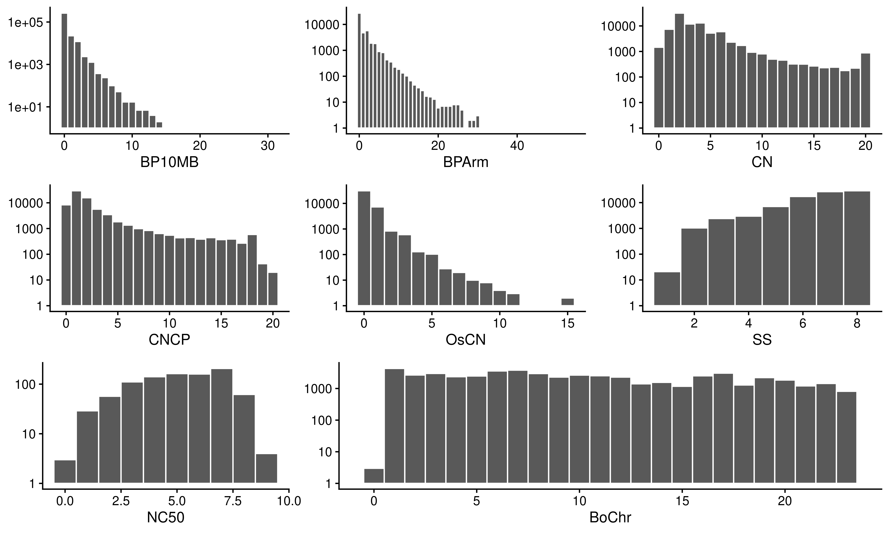
Refernce Maftools vignette: http://bioconductor.org/packages/release/bioc/vignettes/maftools/inst/doc/oncoplots.html
To get a comprehensive and meaningful oncoplot (not affected by passagers), here we include GISTIC2, MutSig and MAF information together.
Before plotting, I will go to modify a result file from GISTIC2, this file uses a different sample ID system as MAF, so we must keep them same.
all.lesions <- "../data/all_lesions.conf_99.txt"
dt = data.table::fread(all.lesions)
dt_names = colnames(dt)
dt_names2 = dt_names
dt_names = ifelse(
stringr::str_detect(dt_names, "SRR"),
stringr::str_extract(dt_names, "SRR[0-9]+$"),
dt_names
)
names(dt_names) = dt_names2
maf_names = maftools::getSampleSummary(Maf)$Tumor_Sample_Barcode %>% as.character()
tcga_names = maf_names[startsWith(maf_names, "TCGA")]
names(tcga_names) = substr(tcga_names, 1, 15)
dt_names[startsWith(dt_names, "TCGA")] = tcga_names[dt_names[startsWith(dt_names, "TCGA")]]
dt_names[is.na(dt_names)] = names(dt_names[is.na(dt_names)])
colnames(dt) = dt_names %>% as.character()
data.table::fwrite(dt, file = "../data/all_lesions.conf_99_v2.txt", sep = "\t")# GISTIC2 data
all.lesions <- "../data/all_lesions.conf_99_v2.txt"
amp.genes <- "../data/amp_genes.conf_99.txt"
del.genes <- "../data/del_genes.conf_99.txt"
scores.gis <- "../data/scores.gistic"
# MutSig2CV data
mutsig <- "../data/PRAD.sig_genes.txt"
maf_plus_gistic <- read.maf(
maf = rbind(Maf@data, Maf@maf.silent),
gisticAllLesionsFile = all.lesions,
gisticAmpGenesFile = amp.genes, gisticDelGenesFile = del.genes,
gisticScoresFile = scores.gis, isTCGA = FALSE, verbose = FALSE
)oncoplot(maf_plus_gistic,
mutsig = mutsig, mutsigQval = 0.05, sortByMutation = TRUE,
logColBar = TRUE, sepwd_samples = 0, draw_titv = TRUE
)
Remove GISTIC2 data from oncoplot.
oncoplot(Maf,
mutsig = mutsig, mutsigQval = 0.05, sortByMutation = TRUE,
logColBar = TRUE, sepwd_samples = 0, draw_titv = TRUE
)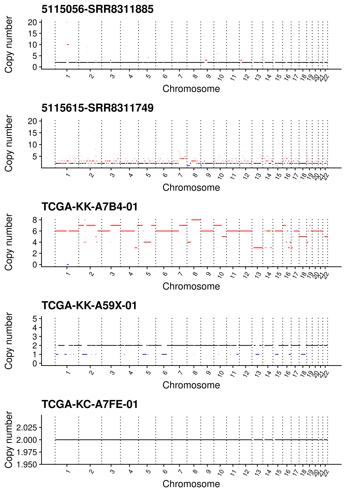
Sample summary
Here we summarize variations for each sample with table.
Copy number data
Summary plots
MAF

Transition and Transversions
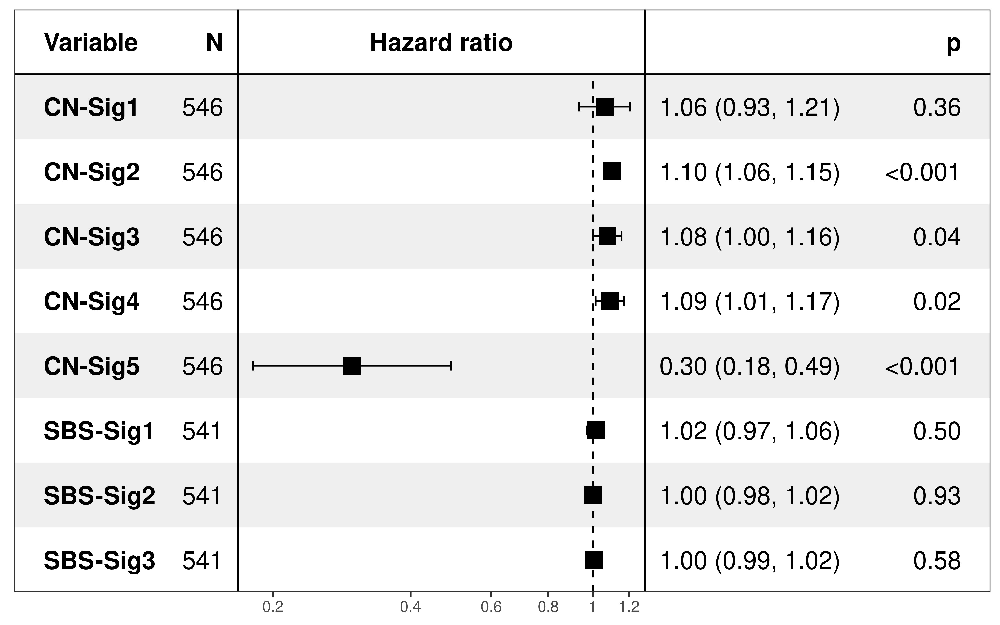
Somatic Interactions
#> gene1 gene2 pValue oddsRatio 00 11 01 10 Event
#> 1: ABCA13 KMT2C 5.107880e-08 10.2128843 896 13 42 27 Co_Occurence
#> 2: RYR3 ABCA13 1.510688e-05 9.8852463 915 8 32 23 Co_Occurence
#> 3: OBSCN TTN 2.087377e-05 4.7803808 841 15 94 28 Co_Occurence
#> 4: KMT2C KMT2D 3.687480e-05 5.3043820 877 12 46 43 Co_Occurence
#> 5: FOXA1 CDK12 4.320195e-05 5.8603172 873 11 23 71 Co_Occurence
#> ---
#> pair event_ratio
#> 1: ABCA13, KMT2C 13/69
#> 2: ABCA13, RYR3 8/55
#> 3: OBSCN, TTN 15/122
#> 4: KMT2C, KMT2D 12/89
#> 5: CDK12, FOXA1 11/94
#> ---
#> [ reached getOption("max.print") -- omitted 5 rows ]Copy number
Copy number segment distribution
The distribution can be viewed as a histgram of segment length.
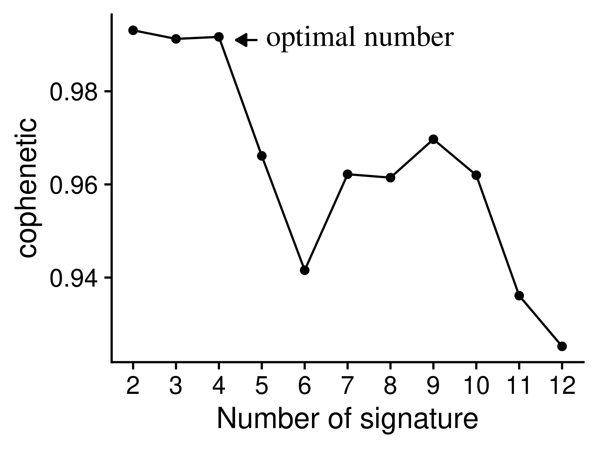
Length summary is:
summary(CNV.seqz@annotation$fraction)
#> Min. 1st Qu. Median Mean 3rd Qu. Max.
#> 0.0000001 0.0175022 0.1578263 0.4650056 0.8146213 1.9997271If we treat SCNA with length > 0.7 as chromosome arm level or whole chromosome level alterations.
The fraction is:
print(nrow(CNV.seqz@annotation[fraction > 0.7 & segVal != 2]) / nrow(CNV.seqz@annotation[segVal != 2]))
#> [1] 0.1489081The distribution can also be viewed from the alteration load across chromosomes.
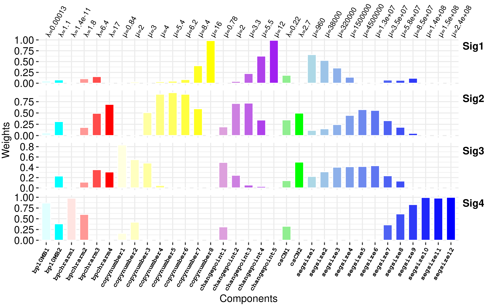
Component distribution

Data details can be viewed as a table:
n_obscolumn indicates the number of event of corresponding copy number component.
Supplementary Analysis and Visualization
This part shows some supplementary analyses and descriptions.
FACETS results
We used 2 methods (Sequenza and FACETS) for copy number calling. However, only Sequenza was used for previous downstream analyses due to the fact that FACETS generated some unreasonable copy number profile for a few samples. We will talk it here.
Let’s load the packages and signature data from FACETS and Sequenza.
library(sigminer)
library(ggplot2)
load("../output/Sig.CNV.facets.W.RData")
load("../output/Sig.CNV.seqz.W.RData")
load("../output/EST.facets.W.all.RData")According to the estimation of signature number, 6 signatures were extracted.
p <- show_sig_number_survey(EST.facets.W.all, right_y = NULL)
add_h_arrow(p, x = 6.2, y = 0.986, seg_len = 0.5, space = 0.2)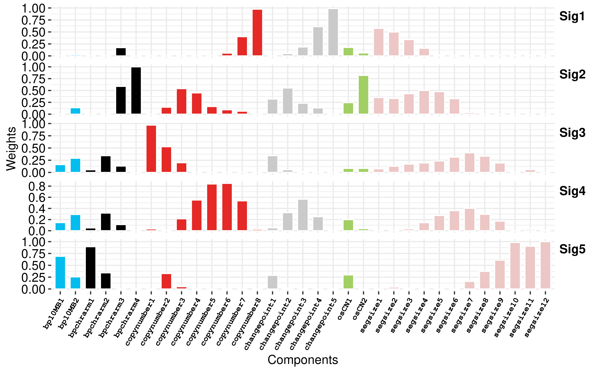
The result signatures are shown as the below.
show_sig_profile(Sig.CNV.facets.W, style = "cosmic", method = "W", normalize = "feature") +
labs(caption = "Signatures from FACETS")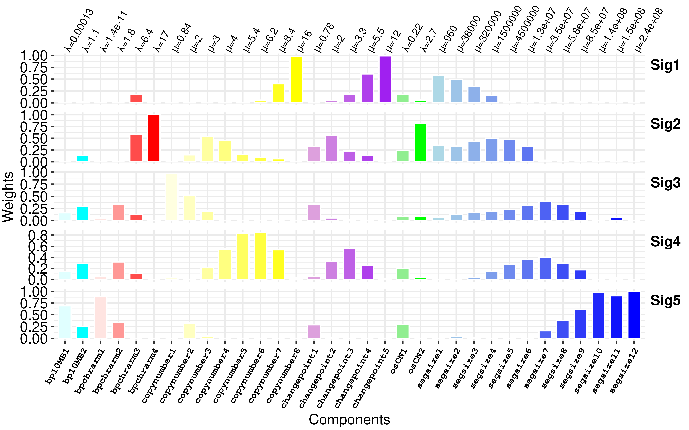
FACETS result has one special and extra signature (Sig1) when compared to Sequenza result. The Sig1 shows copy number segments with high percentage of component “copy number value = 0”.
Other signatures are not identical but very similar in most features beteween FACETS and Sequenza results.
We check some samples with Sig1 enriched.
cn_groups = get_groups(Sig.CNV.facets.W, method = "consensus", match_consensus = TRUE)
#> => Obtaining clusters from the hierarchical clustering of the consensus matrix...
#> => Finding the dominant signature of each group...
#> => Generating a table of group and dominant signature:
#>
#> Sig1 Sig2 Sig3 Sig4 Sig5 Sig6
#> 1 0 0 27 1 0 0
#> 2 19 2 0 7 0 0
#> 3 0 92 1 2 0 0
#> 4 7 52 8 59 9 5
#> 5 0 0 0 188 0 0
#> 6 5 2 0 155 0 292
#> => Assigning a group to a signature with the maxium fraction (stored in 'map_table' attr)...
#> => Summarizing...
#> group #1: 28 samples with Sig3 enriched.
#> group #2: 28 samples with Sig1 enriched.
#> group #3: 95 samples with Sig2 enriched.
#> group #4: 140 samples with Sig4 enriched.
#> group #5: 188 samples with Sig4 enriched.
#> group #6: 454 samples with Sig6 enriched.
cn_expo = get_sig_exposure(Sig.CNV.facets.W, type = "relative")
# Focus on Sig1
df = dplyr::left_join(cn_groups, cn_expo)
#> Joining, by = "sample"
load("../output/CNV.facets.RData")samps_to_show <- df %>%
dplyr::filter(enrich_sig == "Sig1") %>%
dplyr::arrange(dplyr::desc(Sig1)) %>%
dplyr::slice(1:6) %>%
dplyr::pull(sample)
samps_to_show
#> [1] "915-1115081" "141-6" "447-STID0000003036"
#> [4] "915-5115031" "141-25" "915-1115090"
show_cn_profile(
data = CNV.facets, chrs = paste0("chr", c(1:22, "X")), nrow = 3, ncol = 2, show_title = T,
samples = samps_to_show
)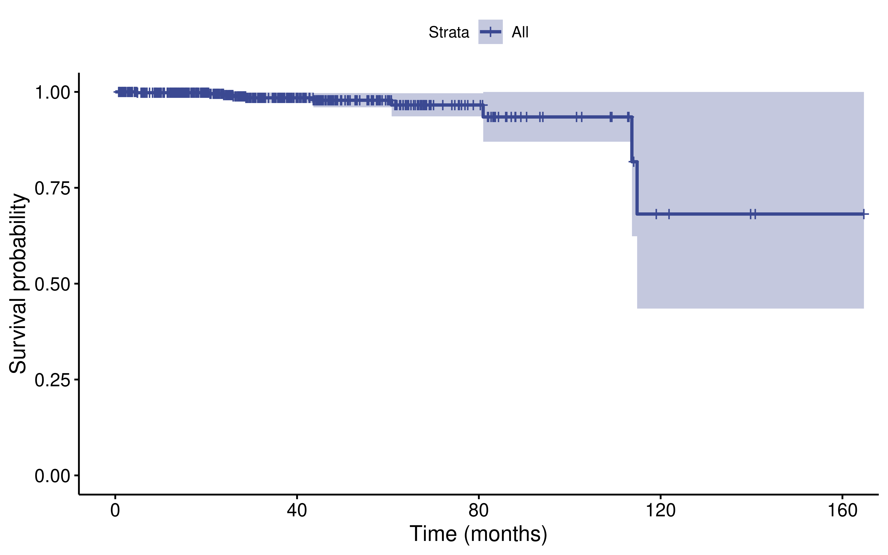
We can observe that the samples with Sig1 enriched have many homozygous deletions, this is unreasonable. I made a communication with the author of FACETS (issue link),
So only logical explanation is homozygous deletion. However they are too many of them and so I believe this is assay artifact rather than real.
This problem seems to come from the raw data. However, we checked the data and this signature cannot be found from the result of Sequenza.
To summary, we used result from Sequenza instead of FACETS for downstream analyses because we found there may be some unknown method problems in FACETS (in general, this method is still reliable).
Method comparison between Macintyre et al and our study
In section “Tally variation records”, I said that our method (defined as “Wang” or “W”) has some advantages over the method used in Macintyre et al (defined as “Macintyre” or “M”).
I will talk the details here.
Firsty let’s load the results from “M” method (the code to generate the data can be found here).
load("../output/Sig.CNV.seqz.M.RData")
load("../output/EST.seqz.M.RData")
load("../output/CNV.seqz.tally.M.RData")Sample-by-component matrix generation
The key difference between method “W” and method “M” is the way to generate the sample-by-component matrix.
- Method “W” defines the components and counts them (details see section “Tally variation records”).
- Method “M” applies mixture modeling to separate the 6 copy number features distributions into mixtures of Poisson or Gaussian distributions.
Here we found that method “M” has the following drawbacks:
- the computation needs huge computing resources. For generating the matrix used for NMF algorithm, it takes about 5100s (~1.5h) with 20 cores for method “M” while only 86s (~1.5m) with 20 cores for method “W”.
- the number of component is dependent on the raw data. If we change the sample size or apply the method “M” to another cohort, the number of component may change. Method “W” will not be affected by this because it uses a fixed number of component.
- the distribution parameters for each distribution are not identical for different runs. Even for the same data, the result distributions and sample-by-component matrix may change.
At the start of this study, I used the method “M” for all analyses. Finally, we created method “W” based on the use and rethinking of method “M” and SBS signature extraction method from previous reports.
Next section, I will talk more problems raised by method “M” from the visualization view.
Copy number signatures from “M” method
We extracted 5 signatures like method “W”. Let’s see their signature profile.
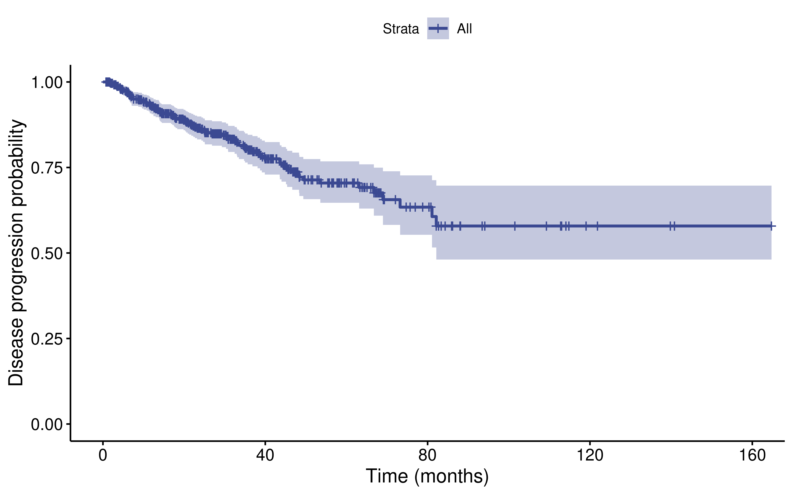
This is a bar plot similar to the one reported by Macintyre et al.
This plot raises some issues.
Issue 1
The matrix used to generate the plot is column normalized, so the heights of bar cannot be compared with each other.
For example, firstly we see the Sig3, we may conclude that component “bp10MB2” has more contributions than component “bp10MB1”. But if we see the raw matrix, we can see that this is wrong!
We cannot compare two or more componets in a row when we normalize the data by column! The plot above may misguide the readers. For the plot above, we can only compare the same component across all signatures. For example, we can conclude that Sig5 captures the majority of component “segsize12” and “segsize11”.
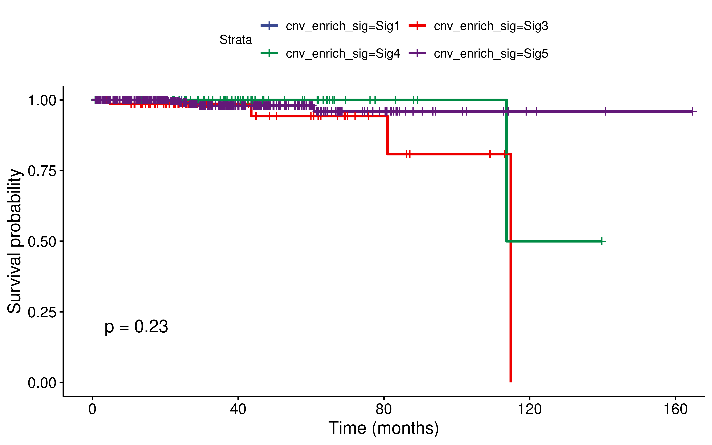
To avoid misguiding readers, gradient colors may work. Also, we must tell readers in text that we should compare one component in a column insteads two or more componets in a row.
show_sig_profile(Sig.CNV.seqz.M, normalize = "column", style = "cosmic",
paint_axis_text = FALSE, set_gradient_color = TRUE)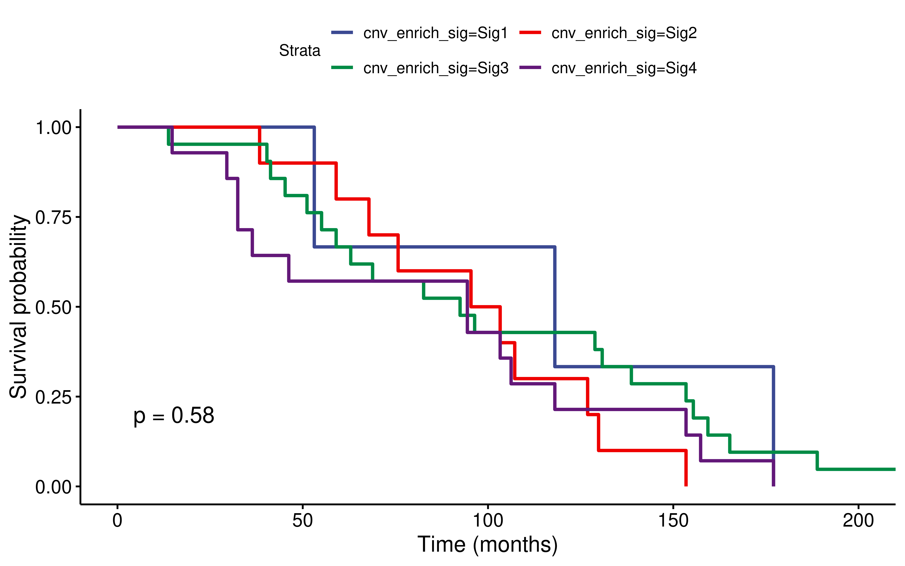
Issue 2
From plot above, we can only see different components, but we cannot see the meaning of each component. For method “M”, each component represents a distribution.
For example, what’s the meaning of the component “copynumber2”? To fix this issue, we tried adding the key parameter value in the plot.
show_sig_profile(Sig.CNV.seqz.M, normalize = "column", style = "cosmic",
paint_axis_text = FALSE, set_gradient_color = TRUE,
params = CNV.seqz.tally.M$parameters, y_expand = 1.5)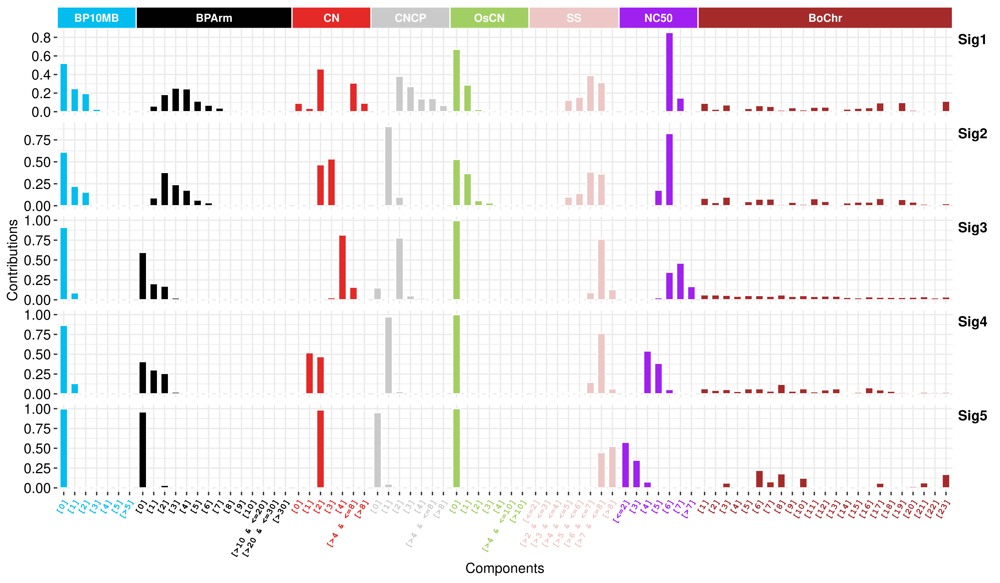
According to the text just added, we can see that component “copynumber2” represents a Gaussian distribution with mean is 2; component “copynumber1” represents a Gaussian distribution with mean is 0.84.
Issue 3
Even with the plot above, we cannot know the dispersion of each component. All distributions with weight for each copy number feature can be viewed as the below.
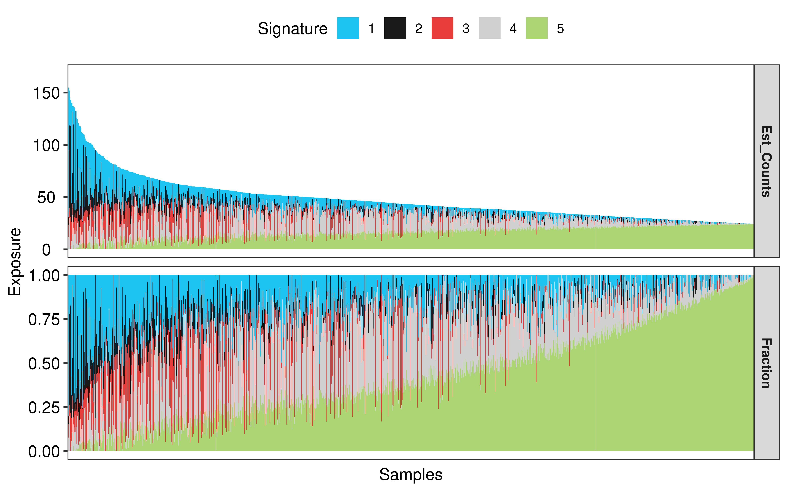
Why we created method “W”
Here, I want to talk something more.
If we take case of all available values for each features, we would notice that there are only limited choices. Let’s visualize them.
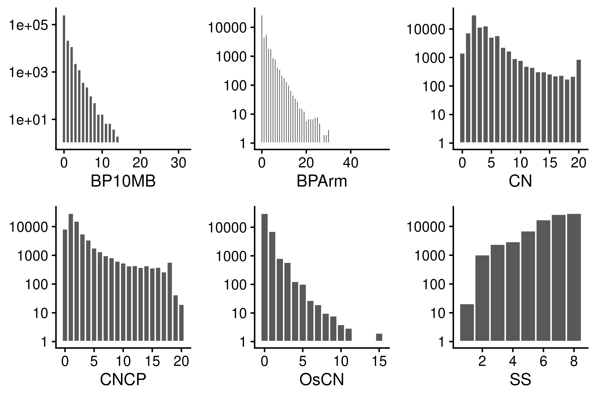
Naturally we can divide them into categories and get a fixed number of components. It would be easy to read, understand and compare. Look back this part, why we choose a complicated method with many drawbacks instead of a simple one?
Some validation analysis in other datasets
We selected 1 PC datasets with copy number segmentation data from cBioPortal:
- http://www.cbioportal.org/study/summary?id=prad_mskcc_2020 (Primary and metastatic tumors)
The segmentation data were converted into absolute copy number data by ABSOLUTE method (Carter et al. 2012) with DoAbsolute. Signatures were extracted with “W” method.
library(sigminer)
library(RColorBrewer)
load("../output/Sig.CNV.mskcc.RData")
# Switch Sig1 and Sig2
Sig.CNV.mskcc = sig_modify_names(Sig.CNV.mskcc, new_names = paste0("Sig", c(2,1,3:5)))
Similarity matrix
Here show results of similarity calculation signatures.
## Use major result as reference
## BoChr feature is removed because it is variable in profile
## and affect the judgement
sim_mskcc = get_sig_similarity(Sig.CNV.mskcc, Sig.CNV.seqz.W, normalize = "feature", pattern_to_rm = "BoChr")
rownames(sim_mskcc$similarity) = paste(rownames(sim_mskcc$similarity), "(MSKCC)")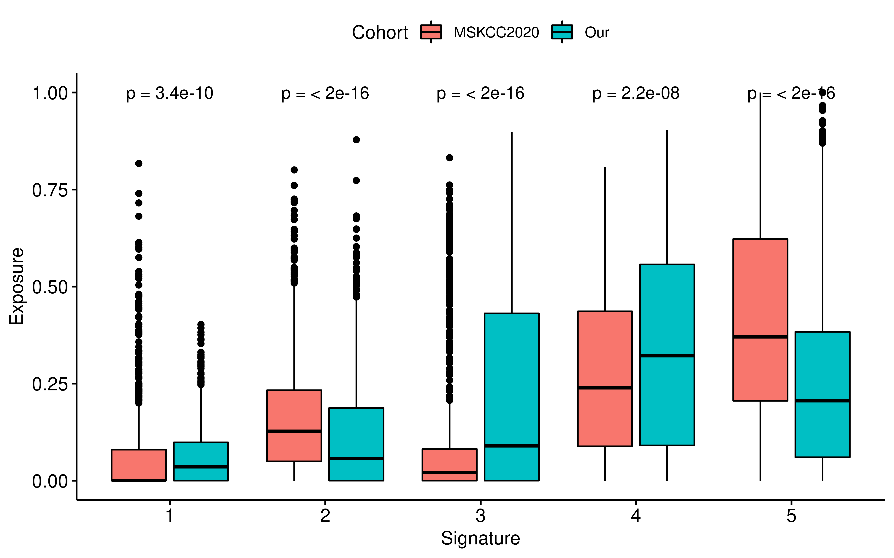
sig.seqz = sig_signature(Sig.CNV.seqz.W, normalize = "feature") %>% as.data.frame()
sig.mskcc = sig_signature(Sig.CNV.mskcc, normalize = "feature")[, c(2,1,3:5)] %>% as.data.frame()
cor.test(sig.seqz$Sig1, sig.mskcc$Sig1)
#>
#> Pearson's product-moment correlation
#>
#> data: sig.seqz$Sig1 and sig.mskcc$Sig1
#> t = 8.6516, df = 78, p-value = 5.122e-13
#> alternative hypothesis: true correlation is not equal to 0
#> 95 percent confidence interval:
#> 0.5672875 0.7969625
#> sample estimates:
#> cor
#> 0.6997817
cor.test(sig.seqz$Sig2, sig.mskcc$Sig2)
#>
#> Pearson's product-moment correlation
#>
#> data: sig.seqz$Sig2 and sig.mskcc$Sig2
#> t = 3.3769, df = 78, p-value = 0.001146
#> alternative hypothesis: true correlation is not equal to 0
#> 95 percent confidence interval:
#> 0.1491269 0.5348861
#> sample estimates:
#> cor
#> 0.3571418
cor.test(sig.seqz$Sig3, sig.mskcc$Sig3)
#>
#> Pearson's product-moment correlation
#>
#> data: sig.seqz$Sig3 and sig.mskcc$Sig3
#> t = 15.821, df = 78, p-value < 2.2e-16
#> alternative hypothesis: true correlation is not equal to 0
#> 95 percent confidence interval:
#> 0.8085723 0.9169635
#> sample estimates:
#> cor
#> 0.8731653
cor.test(sig.seqz$Sig4, sig.mskcc$Sig4)
#>
#> Pearson's product-moment correlation
#>
#> data: sig.seqz$Sig4 and sig.mskcc$Sig4
#> t = 16.486, df = 78, p-value < 2.2e-16
#> alternative hypothesis: true correlation is not equal to 0
#> 95 percent confidence interval:
#> 0.8207251 0.9225298
#> sample estimates:
#> cor
#> 0.8814861
cor.test(sig.seqz$Sig5, sig.mskcc$Sig5)
#>
#> Pearson's product-moment correlation
#>
#> data: sig.seqz$Sig5 and sig.mskcc$Sig5
#> t = 30.086, df = 78, p-value < 2.2e-16
#> alternative hypothesis: true correlation is not equal to 0
#> 95 percent confidence interval:
#> 0.9374232 0.9739083
#> sample estimates:
#> cor
#> 0.9595117Further validate with heatmap of signature component weight.
Exposure comparison
expo_ours = get_sig_exposure(Sig.CNV.seqz.W, type = "relative")
expo_mskcc = get_sig_exposure(Sig.CNV.mskcc, type = "relative")
expo = rbind(expo_ours[, Cohort:="Our"],
expo_mskcc[, Cohort:="MSKCC2020"])
expo_df = tidyr::pivot_longer(expo,
cols = dplyr::starts_with("Sig"),
names_prefix = "Sig",
names_to = "Signature", values_to = "Exposure")library(ggpubr)
ggboxplot(expo_df, x = "Signature", y = "Exposure", fill = "Cohort") +
stat_compare_means(aes(group=Cohort), label = "p.format")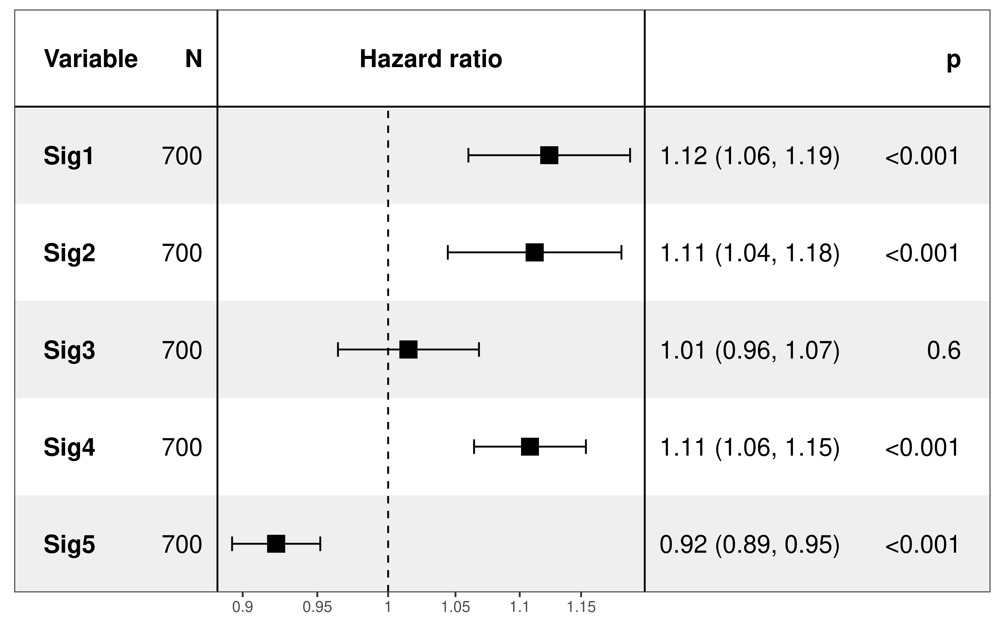
Survival analysis
To better understand the signatures, here we evaluate the association between signature exposure and prognosis.
Firstly, get the signature exposure.
Then we get survival status, patient IDs, sample IDs etc.
mskcc_patient = readr::read_tsv("../data/mskcc_2020/data_clinical_patient.txt", comment = "#")
mskcc_sample = readr::read_tsv("../data/mskcc_2020/data_clinical_sample.txt", comment = "#")Merge data before doing survival analysis with ezcox package.
dat_mskcc = expo_mskcc %>%
dplyr::as_tibble() %>%
dplyr::left_join(
mskcc_sample %>% dplyr::select(SAMPLE_ID, PATIENT_ID, SAMPLE_TYPE),
by = c("sample" = "SAMPLE_ID")
) %>%
dplyr::left_join(
mskcc_patient,
by = "PATIENT_ID"
)Clean. Still scale exposure to 1-20 for indicating HR per 5% exposure increase.
cols_to_sig = paste0("Sig", 1:5)
range01 <- function(x, ...) {
(x - min(x, ...)) / (max(x, ...) - min(x, ...))
}
dat_mskcc2 = dat_mskcc %>%
dplyr::select(sample:SAMPLE_TYPE, OS_STATUS, OS_MONTHS) %>%
dplyr::mutate(
OS_STATUS = ifelse(OS_STATUS == "LIVING", 0, 1)
) %>%
na.omit() %>%
dplyr::mutate_at(
cols_to_sig,
~ 20 * range01(., na.rm = TRUE)
)Now we do survival analysis.
# Unvariable analysis
show_forest(dat_mskcc2, covariates = cols_to_sig,
time = "OS_MONTHS", status = "OS_STATUS", merge_models = TRUE)
Check primary and metastatic samples independently.
show_forest(dat_mskcc2 %>% dplyr::filter(SAMPLE_TYPE == "Primary"), covariates = cols_to_sig,
time = "OS_MONTHS", status = "OS_STATUS", merge_models = TRUE)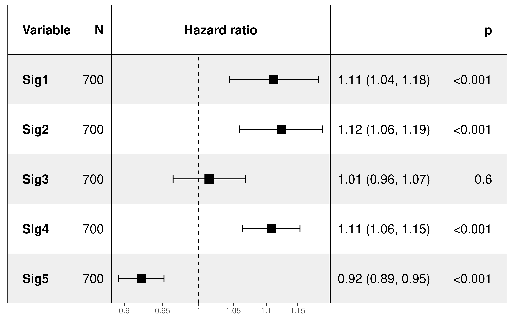
show_forest(dat_mskcc2 %>% dplyr::filter(SAMPLE_TYPE != "Primary"), covariates = cols_to_sig,
time = "OS_MONTHS", status = "OS_STATUS", merge_models = TRUE)
Based on the result from mskcc dataset, overall survival status of primary and metastatic samples roughly have consistent relationship with copy number signatures. However, Sig4 specially functions in primary tumors and Sig3 tends to function in metastatic tumors. Furthermore, from the view of HR comparison between two plots above, copy number signatures have more clinical effects on primary tumors rather than metastatic tumors.
groups = get_groups(Sig.CNV.mskcc, method = "consensus", match_consensus = TRUE)
#>
#> Sig1 Sig2 Sig3 Sig4 Sig5
#> 1 29 7 0 3 1
#> 2 0 76 0 0 0
#> 3 6 20 132 3 1
#> 4 0 15 0 318 0
#> 5 0 24 0 60 607df.map = dplyr::left_join(
dat_mskcc, groups,
by = "sample"
) %>%
dplyr::select("SAMPLE_TYPE", "enrich_sig") %>%
na.omit()names(df.map) = c("Sample type", "Enriched signature")
show_group_mapping(df.map,
col_to_flow = "Sample type",
cols_to_map = setdiff(colnames(df.map), "Sample type"),
fill_na = "NA", include_sig = TRUE)Test the correlation with fisher test.
Reference
Alexandrov, Ludmil B, Serena Nik-Zainal, David C Wedge, Samuel AJR Aparicio, Sam Behjati, Andrew V Biankin, Graham R Bignell, et al. 2013. “Signatures of Mutational Processes in Human Cancer.” Nature 500 (7463). Nature Publishing Group: 415.
Armenia, Joshua, Stephanie AM Wankowicz, David Liu, Jianjiong Gao, Ritika Kundra, Ed Reznik, Walid K Chatila, et al. 2018. “The Long Tail of Oncogenic Drivers in Prostate Cancer.” Nature Genetics 50 (5). Nature Publishing Group: 645.
Carter, Scott L, Kristian Cibulskis, Elena Helman, Aaron McKenna, Hui Shen, Travis Zack, Peter W Laird, et al. 2012. “Absolute Quantification of Somatic Dna Alterations in Human Cancer.” Nature Biotechnology 30 (5). Nature Publishing Group: 413.
Favero, Francesco, Tejal Joshi, Andrea Marion Marquard, Nicolai Juul Birkbak, Marcin Krzystanek, Qiyuan Li, Z Szallasi, and Aron Charles Eklund. 2014. “Sequenza: Allele-Specific Copy Number and Mutation Profiles from Tumor Sequencing Data.” Annals of Oncology 26 (1). European Society for Medical Oncology: 64–70.
Gaujoux, Renaud, and Cathal Seoighe. 2010. “A Flexible R Package for Nonnegative Matrix Factorization.” BMC Bioinformatics 11 (1). BioMed Central: 367.
Krueger, Felix. 2015. “Trim Galore.” A Wrapper Tool Around Cutadapt and FastQC to Consistently Apply Quality and Adapter Trimming to FastQ Files.
Li, Heng. 2013. “Aligning Sequence Reads, Clone Sequences and Assembly Contigs with Bwa-Mem.” arXiv Preprint arXiv:1303.3997.
Li, Heng, Bob Handsaker, Alec Wysoker, Tim Fennell, Jue Ruan, Nils Homer, Gabor Marth, Goncalo Abecasis, and Richard Durbin. 2009. “The Sequence Alignment/Map Format and Samtools.” Bioinformatics 25 (16). Oxford University Press: 2078–9.
Macintyre, Geoff, Teodora E Goranova, Dilrini De Silva, Darren Ennis, Anna M Piskorz, Matthew Eldridge, Daoud Sie, et al. 2018. “Copy Number Signatures and Mutational Processes in Ovarian Carcinoma.” Nature Genetics 50 (9). Nature Publishing Group: 1262.
Mayakonda, Anand, and H Phillip Koeffler. 2016. “Maftools: Efficient Analysis, Visualization and Summarization of Maf Files from Large-Scale Cohort Based Cancer Studies.” BioRxiv. Cold Spring Harbor Laboratory, 052662.
McLaren, William, Laurent Gil, Sarah E Hunt, Harpreet Singh Riat, Graham RS Ritchie, Anja Thormann, Paul Flicek, and Fiona Cunningham. 2016. “The Ensembl Variant Effect Predictor.” Genome Biology 17 (1). BioMed Central: 122.
“Picard Toolkit.” 2019. Broad Institute, GitHub Repository. http://broadinstitute.github.io/picard/; Broad Institute.
Shen, Ronglai, and Venkatraman E. Seshan. 2016. “FACETS: Allele-Specific Copy Number and Clonal Heterogeneity Analysis Tool for High-Throughput DNA Sequencing.” Nucleic Acids Research 44 (16): e131–e131. https://doi.org/10.1093/nar/gkw520.
Van der Auwera, Geraldine A, Mauricio O Carneiro, Christopher Hartl, Ryan Poplin, Guillermo Del Angel, Ami Levy-Moonshine, Tadeusz Jordan, et al. 2013. “From Fastq Data to High-Confidence Variant Calls: The Genome Analysis Toolkit Best Practices Pipeline.” Current Protocols in Bioinformatics 43 (1). Wiley Online Library: 11–10.
Wang, Shixiang, and Xuesong Liu. 2019. “The Ucscxenatools R Package: A Toolkit for Accessing Genomics Data from Ucsc Xena Platform, from Cancer Multi-Omics to Single-Cell Rna-Seq.” Journal of Open Source Software 4 (40): 1627.
Yi, Kijong, and Young Seok Ju. 2018. “Patterns and Mechanisms of Structural Variations in Human Cancer.” Experimental & Molecular Medicine 50 (8). Nature Publishing Group: 98.